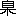

はしがき
これからしばらく続けて筆を執ろうとする随筆断片の一集団に前もって総括的な題をつけようとすると存外むつかしい。書いてゆくうちに何を書くことになるかもわからないのに、もし初めに下手な題をつけておくとあとになってその題に気兼ねして書きたいことが自在に書けなくなるという恐れがある。それだから、いつもは、題などはつけないで書きたいことをおしまいまで書いてしまって、なんべんも読み返して手を入れた上で、いよいよ最後に題をきめて冒頭に書き入れることにしているのである。しかし今度は同じ題で数か月続けようとするのだから事情が少しちがって来る。もっとも、有りふれた「無題」とか「断片」とかいう種類のものにすればいちばん無難ではあるが、それもなんだかあまり卑怯なような気がする。いろいろ考えているとき座右の楽譜の巻頭にあるサン・サーンの Rondo Capriccioso という文字が目についた。こういう題もいいかと思う。しかし、ずっと前に同じような断片群にターナーの画帖から借用した Liber Studiorum という名前をつけたことがあったが、それを文壇の某大家が日刊新聞の文芸時評で紹介してくれたついでに「こんなラテン語の名前などつけるものの気が知れない」と言って非難されたことがあるので、今度もこうした名前は慎むほうがよいであろうと思う。いろいろ考えた末に結局平凡な、表題のとおりの名前を選むことになってしまったわけである。全くむつかしいものである。
この集の内容は例によって主として身辺瑣事の記録や追憶やそれに関する瑣末の感想である。こういうものを書く場合に何かひと言ぐらい言い訳のようなことをかく人も多いようである。考え方によればそれも必要かもしれない。しかし、いかなる個人でもその身辺にはいやでも時代の背景が控えている。それで一個人の身辺瑣事の記録には筆者の意識いかんにかかわらず必ず時代世相の反映がなければならない。また筆者の愚痴な感想の中にも不可避的にその時代の流行思想のにおいがただよっていなければならない。そういうわけであるから現代の読者にはあまりに平凡な尋常茶飯事でも、半世紀後の好事家には意外な掘り出し物の種を蔵しているかもしれない。明治時代の「風俗画報」がわれわれに無限の資料を与え感興をそそるのもそのためであろう。ただし、そういう役に立つためには記録の忠実さと感想の誠実さがなければならないであろう。
これが私の平生こうした断片的随筆を書く場合のおもなる動機であり申し訳である。人にものを教えたり強いたりする気ははじめからないつもりである。
集中には科学知識を取り扱ったものも自然にしばしば出て来るかもしれない。しかしそれも決して科学知識の普及などということを目的として書くのではない。ただ自分でほんとうにおもしろいと感じたことの覚え書きか、さもなければ譬喩か説明のために便利な道具として使うための借りものに過ぎない。しかし、そうかと言ってその結果がいくぶんか科学知識普及に役立つことになってもそれはさしつかえはないであろうと思っている。
ついでながら、断片的な通俗科学的読み物は排斥すべきものだというような事を新聞紙上で論じた人が近ごろあったようであるが、あれは少し偏頗な僻論であると私には思われた。どんな瑣末な科学的知識でも、その背後には必ずいろいろな既知の方則が普遍的な背景として控えており、またその上に数限りもない未知の問題の胚芽が必ず含まれているのである。それで一見いわゆるはなはだしく末梢的な知識の煩瑣な解説でも、その書き方とまたそれを読む人の読み方によっては、その末梢的問題を包含する科学の大部門の概観が読者の眼界の地平線上におぼろげにでもわき上がることは可能でありまたしばしば実現する事実である。読者の頭脳次第では、かなりつまらぬ科学記事からでもいろいろな重大問題の暗示を感知し発見し摂取し発展させることもしばしばあるのである。一方ではまた浅薄な概括的論述を羅列した通俗科学的読み物がはなはだしく読者をあやまるという場合もしばしばあるであろう。それで、ただ一概に断片的な通俗科学はいかなる場合でも排斥すべきものであるかのような感を読者にいだかせるような所説に対しては、少なくも若干の付加修正を必要とするであろうと思われた。この機会についでながら付記しておく次第である。
一 腹の立つ元旦
正月
元旦というときっときげんが悪くなって
苦い顔をして家族一同にも暗い思いをさせる老人があった。それは温厚篤実をもって聞こえた人で世間ではだれ一人非難するもののないほどまじめな親切な老人であって、そうして朝晩に一度ずつ
神棚の前に礼拝し、はるかに皇城の空を伏しおがまないと気の済まない人であった。それが年の始めのいちばんだいじな元旦の朝となると、きまってきげんが悪くなって、どうかすると
煙草盆の灰吹きを
煙管の
雁首で、いつもよりは耳だって強くたたくこともしばしばあった。
その老人のむすこにはその理由がどうしてもわからなかったのであったが、それから二三十年たってその老人もなくなって後に、そのむすこが自分の家庭をもつようになって、そうして生活もやや安定して来たころのある年の正月
元旦の朝清らかな心持ちで起床した瞬間からなんとなく腹の立つような事がいろいろ目についた。きれいに片付いているべき床の間が取り散らされていたり、玄関の障子が破けていたり、女中が台所で何か陶器を取り落としたような音を立てたり、平生なら別になんでもないことが、その元旦に限ってひどく気になり、不愉快になり、やがて腹立たしく思われて来るのであった。その一方ではまた、きょうは元旦だから腹を立てたりしてはいけないという抑制的心理が働いて来る、そうするとかえってそれを押し倒すような勢いで腹立たしさが腹の底から持ち上がって来るのであった。その瞬間にこの男は突然に、実に突然になくなった父のことを思い出してびっくりした。そうして、その瞬間にはじめて今までどうしてもわからなかった、昔の父の元旦の心持ちを理解することができたのである。
それからまた数年たって後のことである。このむすこのむすこがある年の正月に何かちょっとしたことがなるべきようになっていなかったと言ってひどくその母や女中に対しておこっているのをその父親が発見してひどくびっくりし、そうしてまた非常に恐ろしくなったのだそうである。
こういう話を聞いてひどく感心したことがある。つまらない笑い話のようで実はかなり深刻な人間心理の一面を暴露していると思う。こんなのも何かの小説の種にはならないものかと思う。
それはとにかく、正月をめでたいという意味が子供の時分から私にはよくわからなかったが、年を取ってもやはりまだ充分にはわからない。少なくも自分の場合では正月というととかくめでたからぬことが重畳して発生するように思われるのである。のみならず平日ならそれほどにも感じないような
些細なめでたからぬことが、正月であるがために特にふめでたに感ぜられる。これはおそらくだれでも同様に感じることであろう。たとえば小さい子供がおおぜいあるような家ではちょうど
大晦日や元日などによくだれかが
風邪をひいて熱を出したりする。
元旦だからというのでつい医者を呼ばなかったばかりに病気が悪化するといったような場合もありうるであろう。
高等学校時代のある年の元旦に二三の同窓といっしょに諸先生の家へ年始回りをしていたとき、ある先生の門前まで来ると連れの一人が立ち止まって妙な顔をすると思ったら突然仰向けにそりかえって門松に倒れかかった。そうしてそれなりに地面に寝てしまって口から
泡を吹き出した。驚いて先生を呼び出して病人をかつぎ込んでから顔へ水をぶっかけたり大騒ぎをした。幸いにまもなく正気づきはしたが、とにかくこれがちょうど元旦であったために特に大きな不祥事になってしまったのである。
正月元旦は年に一度だから幸いである。もしこれが一年に三度も四度もあったらたいへんであろうと思われるが、しかしいっそのことこれが一年に十二回とか五十回とかあるようになればまたかえって楽になるかもしれない。そう思ってみると、一年に一回ずつ特別な日を設けて、それを理由などかまわずとにもかくにもめでたい日ときめてしまって
強いてめでたがり、そうしてそのたびに発生するいろいろな迷惑をいっそう痛切に受難することにもなかなか深い意義があるような気がしてくる。
正月をめでたいとして祝うことを始めて発明した人があったとしたら、その人はやはりなかなかえらい人であったろうと思われるのである。
二 こじきの体験
子供の時分、たぶん七八歳ぐらいのころかと思うがとにかくあまり自慢にならぬこじきの体験をしたことがある。
そのころ郷里
高知では正月の十四日の晩に子供らが「
粥釣り」と称して近所の家を回って米やあずきや切り
餅をもらって歩いて、それで翌朝十五日の福の粥を作るという古い習慣が行なわれていた。素面ではさすがにぐあいが悪いと見えてみんな道化た仮面をかぶって行くことになっていたので、その時期が来ると市中の荒物屋やおもちゃ屋にはおかめ、ひょっとこ、桃太郎、さる、きつねといったようないろいろの仮面を売っていた。
泥色をした浅草紙を型にたたきつけ
布海苔で堅めた表面へ
胡粉を塗り絵の具をつけた至って粗末な仮面である。それを買って来て焼け
火箸で両方の目玉のまん中に穴を明ける。その時に妙な焦げ臭いにおいがする。それから面の両側の穴に元結いの切れを通して面ひもにするのである。面をかぶるとこの焦げ臭いにおいがいっそうひどい、そうして自分のはき出す呼気で面の内側が湿って来ると
魚膠のにおいやら浅草紙のにおいやらといっしょになって実に胸の悪い臭気をかもし出すのであった。五十年後の今日でもありありこの臭気を思い出すことができるのである。
四五人、五六人という群れになって北山おろしの木枯らしに吹かれながら軒並みをたずねて玄関をおとずれ、口々にわざと妙な作り声をして「カイツットーセ」という言葉を繰り返す。「粥釣りをさせてください」という意味の方言なのである。すると家々ではかねて玄関かその次の間に用意してある
糯米やうるちやあずきや切り餅を少量ずつめいめいの持っている袋に入れてやる。みんなありがとうともなんとも言わずにそれをもらって次の家へと回って行くのである。
平生は行ったこともない敷居の高い家の玄関をでもかまわず正面からおとずれて、それとなく家居のさまを見るという一種の好奇心のようなものがこれらの小さいこじきたちの興味の中心であったように見える。大概の家では女中らはもちろん奥さんや娘さんまでのぞきに出て来て、道化た面をかぶった異風な小こじきの狂態に笑いこける。そこには一種のなんとなく
窈窕たる
雰囲気があったことを当時は自覚しなかったに相違ないが、かなりに鮮明なその記憶を今日分析してみてはじめて発見するのである。
粥釣りが子供ばかりでなくむしろおとなによって行なわれたかと思わるる昔ではこうした雰囲気があるいはかなりに重要な意義をもっていたのではないかとも想像されるのである。
自分の
宅へ来る粥釣りを内側から見物した場合のほうが多かったように思う。粥釣りに来るおおぜいの中でも勇敢なのは堂々と先頭に立ってやって来るが、気の弱いのは先頭の背後に隠れるようにして袋をさし出すのもある。しかしなにしろおもに近所の人たちであるから、たとえ女の着物を着たり、羽織をさかさまに着たりしていてもおおよその見当がつく場合が多い。粥釣りを迎える家に勇猛な女中でもいると少し怪しいと思われるようなのをいきなりつかまえて面を引きはごうとして大騒ぎになるようなこともあったような気がする。
こじきを三日すると忘れられないというが、自分にもこのこじきの体験は忘れられないものである。このこじき根性が抜けないおかげで今日をどうやらこうやら飢えず凍えず暮らして行かれるのかもしれないのである。
こんな年中行事は郷里でも、もうとうの昔に無くなってしまって、若い人たちにはそんな事があったということさえ知られていないかもしれない。
三 冬夜の田園詩
これも子供の時分の話である。冬になるとよく北の山に山火事があって、夜になるとそれが美しくまた物恐ろしい童話詩的な
雰囲気を田園のやみにみなぎらせるのであった。
友だちと連れ立って夜ふけた田んぼ道でも歩いているときだれの口からともなく「キーターヤーマー、ヤーケール、シシーガデゥヨ」と歌うと他のものがこれに和する。終わりの「出ぅよ」を早口に歌ってしまうと何かに追われでもしたようにみんないっせいに駆け出すのであった。そういうときの不思議な気持ちを今でもありありと思い出すことができる。
自分が物心づくころからすでにもうかなりのおばあさんであって、そうして自分の青年時代に八十余歳でなくなるまでやはり同じようなおばあさんのままで
矍鑠としていたＢ家の
伯母は、冬の夜長に孫たちの集まっている燈下で大きなめがねをかけて夜なべ仕事をしながらいろいろの話をして聞かせた。その中でも実に不思議な詩趣を子供心に印銘させた話は次のようなものであった。
冬のやみ夜に山中のたぬきどもが集まって舞踊会のようなことをやる。そのときに足踏みならしてたぬきの歌う歌の文句が、「こいさ（
今宵の方言）お月夜で、お山踏み（たぶん
山見分の役人のことらしい）も来まいぞ」というので、そのあとに、なんとかなんとかで「ドンドコショ」というはやしがつくのである。それを伯母が節おもしろく「コーイーサー、（休止）、オーツキヨーデー、（休止）、オーヤマ、フーミモ、コーマイゾー」というふうに歌って聞かせた。それを聞いていると子供の自分の眼前には山ふところに落ち葉の散り敷いた冬木立ちのあき地に踊りの輪を描いて踊っているたぬきどもの姿がありあり見えるような気がして、
滑稽なようで物すごいような、なんとも形容のできない夢幻的な気持ちでいっぱいになるのであった。
後年夏目先生の
千駄木時代に自筆絵はがきのやりとりをしていたころ、ふと、この
伯母のたぬきの踊りの話を思い出して、それをもじった絵はがきを先生に送った。ちょうど先生が「
吾輩は
猫である」を書いていた時だから、さっそくそれを利用されて作中の人物のいたずら書きと結びつけたのであった。
それはとにかく、この「山火事と
野猪」の詩や、「たぬきの舞踊」の詩には現代の若い都人士などには想像することさえ困難であろうと思われるような古い古い「民族的記憶」といったようなものが含まれているような気がする。それは万葉集などよりはもっと古い昔の詩人の夢をおとずれた東方原始民の詩であり歌であったのではないかと思われるのである。そうした詩が数千年そのままに伝わって来ていたのがわずかにこの数十年の間に跡形もなく消えてしまうのではないかと疑われる。
グリムやアンデルセンは北欧民族の「民族的記憶」のなごりを惜しんで、それを消えない前によび返してそれに新しい生命を吹き込んだ人ではないかと想像される。
近ごろわが国でも土俗学的の研究趣味が
勃興したようで誠に喜ばしいことと思われるが、一方ではまたここに例示したような不思議な田園詩も今のうちにできるだけ収集し保存しまたそれを現在の詩の言葉に翻訳しておくことも望ましいような気がするのである。
四 食堂骨相学
ある大衆的な食堂で見知らぬ人たちと居並んで食事をしていた。自分は耳がよくないせいか、それとも頭がぼんやりしているせいか、平生はこうした場所で隣席の人たちの話している声はよく聞こえても、話している事がらの内容はちっともわからないのであるが、その日隣席で話している中老人二人の話し声の中でただ一語「イゴッソー」という言葉が実にはっきり聞きとれたのでびっくりした。もやもやした霧の中から突然日輪でも出現したようにあまりにくっきりとそれだけが聞こえて、あとはまた元どおりぼやけてしまった。
「イゴッソー」というのは郷里の方言で「
狷介」とか「強情」とかを意味し、またそういう性情をもつ人をさしていう言葉である。この二老人はたぶん自分の郷里の人でだれか同郷の第三者のうわさ話をしながら、そういう適切な方言を使ったことと想像される。
それはなんでもないことであるが、私がこの方言を聞いてびっくりして二人の顔を見たときに二人の顔が急に自分に親しいもののように思われて来て、なんだかずっと昔郷里のどこかで見たことがあるか、あるいは自分のよく知っているだれかによく似ているかどちらかであるような気がして来たのであった。
これは単に久しぶりに耳にした方言のよび起こした錯覚であったかもしれない。しかしまた郷里のような地理的に歴史的に孤立した状態で長い年月を
閲して来た国の民族の骨相には、やはりその方言といっしょにこびりついた共通な特徴があるのではないかという疑いも起こるのであった。
また別なとき同じ食堂でこのかいわいの銀行員らしい中年紳士が二人かなり高声に私にでも聞き取れるような高調子で話しているのを聞くともなく聞いていると、当時の内閣諸大臣の骨相を品評しているらしい。詳細は忘れたが結局大臣には人相が最も大切な資格の一つであって、この資格の欠けている大臣は決して長続きしないといったようなことを一人が実例をあげて主張していた。相手は「まあ
卜筮よりは骨相のほうがましだろう」と言っているようであった。この二人の話を聞いてからなるほどそんな事もあろうかと思って試みに当代ならびにその以前の
廟堂諸侯の骨相を頭の中でレビューしながら「大臣顔」なるものの要素を分析しようと試みたのであった。
ついせんだってのあのベーブ・ルースの異常な人気でも、ことによると彼の特異な人相に負うところが大きいのかもしれない。
こうした大食堂の給仕人はたいていそろそろ年ごろになろうという女の子であって、とにかくあまり醜くないような子をそろえている。それらのだいたい同じくらいの年ごろの女の子が皆同じ制服を着ているからちょっと見ると身長の差別と肉づきの相違ぐらいしか目につかないようである。
制服というものはある意味では人間の個性を
掩蔽するものである。少し離れて見れば一隊の兵士は同じ鋳型でこしらえた鉛の兵隊のように見える。しかし食堂女給のような場合にもまた逆に服装が同一であるために個人の個性がかえって最も顕著に示揚されるようにも見える。
清長型、
国貞型、ガルボ型、ディートリヒ型、
入江型、
夏川型等いろいろさまざまな日本婦人に可能な
容貌の類型の標本を見学するには、こうした一様なユニフォームを着けた、そうしてまだ粉飾や
媚態によって自然を
隠蔽しない
生地の
相貌の収集され展観されている場所にしくものはないようである。
容貌のタイプということと美醜とは必ずしも一致しないようである。たとえばキャサリン・ヘプバーン型の美人と醜婦を一人ずつ捜し出すのなどははなはだ容易であろう。
食堂の女給の制服は腕を露出したのが多い。必然の結果として食物を食卓に並べるとき露出された腕がわれわれの面前にさし出される。日本で女の子の腕を研究するのにこれほど適当な機会はまたとないであろうと思われる。
美しい腕をもった子は存外少ないようである。応募者の試験委員たちの採点表中に容貌の条項はあっても腕の条項がないかもしれないが、少なくも食堂の場合には、これも一つのかなりの程度まで考慮さるべきアイテムとなるべきものかもしれない。
器量のよくないので美しい腕の持ち主もある一方ではまた美しい顔とむしろ醜い腕との結合もあるようである。神の制作したものには浅はかな人間の概念的な一般化を許さないものがあるのである。
食堂やあるいは電車の中などで、隣席の人のもっているステッキの種類特にその頭部の装飾を見ると、それに現われたその持ち主の趣味がたいていネクタイとか腕時計とか他の持ち物に反映しているように思われる。しかし神の取り合わせた顔と腕にはそうした簡単な相関はどうもないように見える。
食堂の入り口をながめているとさまざまの人の群れが入り込んで来る中に、よくおかあさんとお嬢さんとの一対が見られる。そうして多くの場合おかあさんよりもお嬢さんのほうが背が高く、そうしていばっているような気がする。おかあさんのほうが下手に出て何か相談しかけるとお嬢さんのほうはふんふんと鼻であしらって高圧的に出る、そういったのがよく目につく。もし代々娘のほうが母親よりも身長が一割高くなると仮定すると七八代で二倍になる勘定である、そうなったらたいへんであるがしかしこれは現代の過渡期に特有な現象であろうかと思われる。
五 百貨店の先祖
百貨店の前身は
勧工場である。
新橋や
上野や
芝の勧工場より以前には
竜の
口の勧工場というのがあって一度ぐらい両親につれられて行ったような
茫とした記憶があるが、夢であったかもしれない。それはとにかく、その勧工場のもう一つ前の前身としては
浅草の
仲見世や
奥山のようなものがあり、
両国の橋のたもとがあり、そうして所々の縁日の露店があったのだという気がする。
田舎では鎮守の祭りや市日の売店があった。西洋でもおそらく同様であったろうと想像される。ドイツやフランスの田舎の町の「市」の光景は実によく自分の子供のころの田舎の市のそれと似かよったものをもっていたようである。
子供の時分にそうした市の露店で買ってもらった品々の中には少なくも今のわれわれの子供らの全く知らないようなものがいろいろあった。
肉桂の根を束ねて赤い紙のバンドで巻いたものがあった。それを買ってもらってしゃぶったものである。チューインガムよりは刺激のある辛くて甘い特別な香味をもったものである。それから肉桂酒と称するが実は酒でもなんでもない
肉桂汁に紅で色をつけたのを小さなひょうたん形のガラスびんに入れたものも当時のわれわれのためには天成の甘露であった。
甘蔗のひと節を短刀のごとく握り持ってその切っ先からかじりついてかみしめると少し青臭い甘い
汁が舌にあふれた。
竹羊羹というのは青竹のひと節に黒砂糖入り水羊羹をつめて凝固させたものである。底に当たる節の隔壁に
錐で小さな穴を明けておいて開いた口を吸うと羊羹の棒がなめらかに抜け出して来る、それを短く歯でかみ切って食う、残りの円筒形の羊羹はちょっと吹くとまた竹筒の底に落ち着くのである。また吸い出しては食い切る。きたないと言えばきたないが、しかしそこには一種の
俳諧があった。つい近ごろどこかのデパートでこれと同じものを見つけたが食ってはみなかった。おそらく四十年前の味は求められないであろう。
おもちゃではポペンというものが一時流行した。首の長いガラスのフラスコの底板を思い切り薄くして少しの曲率をもたせて
彎曲させたものである。その首を口にふくんで適当な圧力で吹くと底のガラスの薄板がポンという音を立ててその曲率を反転する。逆に吸い込むとペンと言ってもとの向きに彎曲する。吹くのと吸うのを交互に繰り返すと、ポペン／＼／＼というふうな音を出す。吹き方吸い方が少し強すぎるとすぐに底が割れてしまう。いわゆるその「呼吸」がちょっとむつかしい。これを売っている露店商は特製特大の赤ん坊の頭ぐらいのを空に向けてジャンボンジャンボンと盛んに不思議な騒音を空中に飛散させて顧客を呼んだものである。実に無意味なおもちゃであるがしかしハーモニカやピッコロにはない俳味といったようなものがあり、それでいて南蛮的な異国趣味の多分にあるものであった。
むきになって理屈を言ってる鼻の先へもって来てポペンポペンとやられると、あらゆる論理や哲学などが一ぺんに吹き散らされるところに妙味があったようにも思われる。
（昭和十年一月、中央公論）
六 干支の効用
去年が「
甲戌」すなわち「
木の
兄の
犬の年」であったからことしは「
乙亥」で「
木の
弟の
猪の年」になる勘定である。こういう昔ふうな年の数え方は今ではてんで相手にしない人が多い。モダーンな日記帳にはその年の
干支など省略してあるのもあるくらいである。実際
丙午の女に関する迷信などは全くいわれのないことと思われるし、
辰年には火事や暴風が多いというようなこともなんら科学的の根拠のないことであると思われるが、しかしこれらは干支の算年法に付帯して生じた迷信であって、そういう第二義的な弊が伴なうからと言って干支の使用が第一義的に不合理だという証拠にはならない。昔から長い間これが使われて来たのはやはりそれだけの便利があったからである。
十と十二の最小公倍数は六十であるから十干十二支の組み合わせは六十年で一週期となる。この数は二、三、四、五、六のどれでも割り切れるから、一年おきの行事でも、三年に一度の万国会議でも、四年に一度のオリンピアードでも、五年六年に一度の祭礼でも六十年たてばみんな最初の歩調をとり返すのである。その六十年はまたほぼ人間の一週期になるのである。
人間の
生涯でも六十年前の自分と六十年後の自分とはまず別人であり、世間の状態でも六十年たてばもう別の世界である。この前の乙亥は明治八年であるが、もしどこかに、乙亥の年に
西郷隆盛が何かしたという史実の記録があれば、それは確実に明治八年の出来事であって、昭和十年でもなくまた文化十二年でもないことが明白である。
明治八年とだけでは場合によってはずいぶん心細いことがある。活字本だと、もしか九年の誤植であるかもしれない。
隆盛はとにかく、事がらによっては十八年の十が脱落したという可能性もある。しかし明治八
乙亥とあればまず八年に間違いはないのである。年数と
干支が全部合理的につじつまを合わせて、念入りに誤植されるという偶然の確率はまず事実上零に近いからである。
それだから年号と年数と干支とを併記して
或る特定の年を確実不動に指定するという手堅い方法にはやはりそれだけの長所があるのである。
為替や手形にデュープリケートの写しを添えるよりもいっそう手堅いやり方なのである。
年の干支と同様に日の干支でもこれを添えることによって日のアイデンティフィケーションがほとんど無限大の確実さを加える。これに七曜日を添えればなおさらである。たとえば
甲子の日曜日は一年に一つあることとないこととあるのである。
干支を廃し、おまけに七曜も廃するか、あるいはある人たちの主張するように毎年の同月日を同じ日曜にしてしまうというしかたは、一見合理的なようで実は存外そうでないかもしれない。
机や
椅子の足は何も四本でなくても三本でちゃんと役に立つ、のみならず四本にするとどれか一本は遊んでいて安定位置が不確定になる恐れがあるというのは物理学初歩で教わることである。しかしその合理的な三本足よりも不合理な四本足が最も普通に行なわれているのは何ゆえであろうか。この問題はあまり簡単ではないが、ともかくも四本の一本がまさかのときの用心棒として平時には無用の長物という不名誉の役目を引き受けているのであろう。
数の勘定には十進法の数字だけあればそれでよいというのは、言わば机の三本足を使う流儀であって、これに一見無用な干支を添えるのは用心棒を一本足した四本足を採用する筆法である。むだはむだでも有用なむだであるとも言われる。
十進法というのは言わば単式の数え方であって十干だけを用いると同等である。甲を一、乙を二、丙を三と順々に置き換えてしまえば、たとえば二十三と言う代わりに乙丙と言っても文字がめんどうなだけで理屈は同じである。これに反して
干支法は言わば複式の数え方で、十進法と十二進法との特殊な結合である。
甲子を一とし
乙丑を二とすれば
甲戌は十一であり
丙子は十三になる、少しめんどうなだけに、それだけの長所はあるのである。
おもしろいことには、偶然ではあろうが、太陽黒点の週期が約十一年であって、これが十干の十年と十二支の十二年との中間に当たっている。それで、太陽黒点と関係のあるらしい週期的な気象学的あるいは気候学的現象の異同が自然に干支と同じような週期性を示すことがしばしば起こりうるわけである。たとえばある特定の地方である「水の
兄」の年に偶然水害があった場合に、それから十一年後の「水の
弟」の年に同じような水害の起こる確率が相当多いという事もあるかもしれない。ある
辰年の冬ある地方がひどく乾燥でそのために大火が多かったとして、次の辰年にも同様な乾燥期が来るということには、単なる偶然以外に若干の気候週期的な
蓋然率が期待されないこともない。
気候の変化が人間の生理にも若干の影響があるかもしれないとすると、それが胎児の特異性に多少の効果を印銘することが全然ないとも限らないし、そうなると生まれ年の干支とその人の特性とが、少なくもある期間については多少の相関を示す場合がないとも言われないような気がして来るのである。もちろんこれは大風が吹いて
桶屋が喜ぶというのと同じ論法ではあるが、そうかと言ってそういうことが全然ないということの証明もまたはなはだ困難であることだけは確かである。証明のできない言明を
妄信するのも実はやはり一種の迷信であるとすれば、干支に関するいろいろな古来の口碑もいつかはまじめに吟味し直してみなければならないと思われるのである。
七 灸治
子供の時分によくお
灸をすえると言っておどされたことがある。今のわれわれの子供にはもうお灸が何だか知らないのが多いようである。もぐさを見たことのない子供も少なくないであろう。お灸がいかなるものであるかを説明してやると驚いているようである。
小さい時分にはおどされるだけでほんとうにすえられたことはなかったようである。水泳などに行って友だちや先輩の背中に妙な
斑紋が規則正しく並んでいて、どうかするとその内の一つ二つの
瘡蓋がはがれて大きな穴が明き、中から
血膿が顔を出しているのを見て気味の悪い思いをした記憶がある。見るだけで自分の背中がむずむずするようであった。なんのためにわざわざこんないやなことをするのか了解できなかった。十二三歳のころ病身であったために、とうとう「ちりけ」のほかに五つ六つ肩のうしろの背骨の両側にやけどの跡をつけられてしまった。なんでもいろいろのごほうびの交換条件で納得させられたものらしい。
大学の二年の終わりに病気をして一年休学していた間に「片はしご」というのをおろしてくれたのが近所の国語の先生の奥さんであった。家伝の名灸でその秘密をこの年取った奥さんが伝えていたのである。なんでも
紙撚だったか
藁きれだったか忘れたが、それでからだのほうぼうの寸法を計って、それから割り出して
灸穴をきめるのであるが、とにかく
脊柱のたぶん右側に上から下まで、首筋から
尾 骨
骨までたしか十五六ほどの灸穴を決定する。それに、はじめは一度に三つずつ一週間後から五つずつというふうにだんだんすえる数を増して行って、おしまいには二十ぐらいずつすえるのである。なかなかここいらは合理的である。
上から下へだんだんにすえて行くと痛さの種類がだんだんに少しずつ変わって行くのが妙である。上のほうのは言わば乾性、あるいは男性的の痛さで少し肩に力を入れて力んでいればなんでもないが腰のほうへ下がって行くと痛さが湿性あるいは女性的になって、かゆいようなくすぐったいような泣きたいような痛さになる。動かすまいと思っても腰をひねらないではいられないような気持ちがする。同じ刺激に対する感覚が皮膚の部分によって違うのはこれに限らない事ではあるが、このはしご
灸などは一つのおもしろい実験である。ただその感覚の段階的変化を表示する尺度がまだ発見されていないのは残念である。
そのころの郷里には「切りもぐさ」などはなかったらしく、紙袋に入れたもぐさの
塊から一ひねりずつひねり取っては付けるから
下手をやると大小ならびにひねり方の剛柔の異同がはなはだしく、すえられるほうは見当がつかなくて迷惑である。母は非常にこれが
上手で粒のよくそろったのをすえてくれた。一つは母の慈愛がそうさせたであろう。女中などが代わると、どうかするとばかに大きいのや堅びねりのが交じったり、線香の先で火のついたのを引き落として背中をころがり落とさせたりして、そうしてこっちが驚いておこるとよけいにおもしろがってそうするのではないかという
嫌疑さえ起こさせるのであった。
南国の真夏の暑い真盛りに庭に面した風通しのいい座敷で背中の風をよけて母にすえてもらった日の記憶がある。庭では一面に
蝉が鳴き立てている。その蝉の声と背中の熱い痛さとが何かしら相関関係のある現象であったかのような幻覚が残っている。同時にまた灸の刺激が一種の涼風のごときかすかな快感を伴なっていたかのごとき
漠然たる印象が残っているのである。
背中の
灸の跡を夜寝床ですりむいたりする。そのあとが少し
化膿して痛がゆかったり、それが
帷子でこすれでもすると背中一面が強い意識の対象になったり、そうした記憶がかなり鮮明に長い年月を生き残っている。そういうできそこねた
灸穴へ火を点ずる時の感覚もちょっと別種のものであった。
一日分の灸治を終わって、さて平手でぱたぱたと背中をたたいたあとで、灸穴へ一つ一つ墨を塗る。ほてった皮膚に冷たい筆の先が点々と
一抹の涼味を落として行くような気がする。これは化膿しないためだと言うが、墨汁の
膠質粒子は外からはいる
黴菌を食い止め、またすでに付着したのを吸い取る効能があるかもしれない。
寒中には着物を後ろ前に着て背筋に狭い窓をあけ、そうして
火燵にかじりついてすえてもらった。神経衰弱か何かの療法に
脊柱に沿うて冷水を注ぐのがあったようであるが、自分の場合は背筋のまん中に沿うて四五寸の幅の帯状区域を寒気にさらして、その中に点々と週期的な暑さの集注点をこしらえるという複雑な方法を取ったわけである。そういう、西洋のえらい医学の大家の夢にも知らない療養法を
須崎港の宿屋で長い間続けた。その手術を引き受けていたのは
幡多生まれで幡多なまりの鮮明なお
竹という女中であった。三十年前の善良にして忠実なるお竹の顔をありあり思い出すのであるが、その後の消息を明らかにしない。無事でいればもうずいぶんおばあさんになっていることであろう。
灸などきくものかと一概にけなす人もある。もしなんの効能もないとすると、祖先の日本人は仏法伝来と同時に輸入されたというこの唐人のぺてんに二千年越しだまされつづけて無用なやけどをこしらえて喜んでいたわけである。
二千年来信ぜられて来たという事実はそれが真であるという証拠には少しもならない。しかし
灸の場合には事がらが精神的ばかりでなくともかくも生理的な生き身の一部に明白な物理的化学的な刺激を直接密接に与えるのであるから、きくきかぬが生理的に実証の審判にかけられうるわけだと思われる。
生理学の初歩の書物を読んでみると、皮膚の一部をつねったりひねったりするだけで、腹部の内臓血管ことにその細動脈が収縮し、同時に筋や中枢神経系に属する血管は開張すると書いてある。灸をすえるのでも似かよった影響がありそうである。のみならず、焼かれた皮膚の局部では
蛋白質が分解して血液の水素イオン濃度が変わったり、周囲に対する電位が変わったり、ともかくもその付近の細胞にとっては重大な事件が起こる。それが一つの有機体であるところの身体の全部にたとえ微少でもなんらかの影響のないはずはなさそうである。
それがある病気にどれだけきくかはまた別問題であるがそれは立派に一つの研究問題になる事であり、そうしてまさに日本の医者生理学者の研究すべき問題である。それだのに不思議なことには従来灸治の科学的研究をして学位でも取ったという人は、あるかもしれないがあまりよく知られていないようである。今にドイツとか米国とかでだれかが
歌麿や
北斎を発見したように灸治法の発見をして大論文でも書くようになれば日本でも灸治研究が流行をきたすかもしれないと思われる。
（「螢光板」への追記） 前項「灸治」について高松高等商業学校の大泉行雄氏から書信で、九州福岡の原志兔太郎氏が灸の研究により学位を得られたと思うという知らせを受けた。右の原氏著「お灸療治」という小冊子に灸治の学理が通俗的に説明されているそうである。一見したいと思っているがまだその機会を得ない。その後にまた麻布の伊藤泰丸氏から手紙をよこされて、前記原氏のほかに後藤道雄、青地正皓、相原千里等の各医学博士の鍼灸に関する研究のある事を示教され、なお中川清三著「お灸の常識」という書物を寄贈された、ここに追記して大泉氏ならびに伊藤氏に感謝の意を表したいと思う。
八 黒焼き
学生時代に東京へ出て来て物珍しい気持ちで町を歩いているうちに偶然出くわして特別な興味を感じたものの一つは
眼鏡橋すなわち今の
万世橋から
上野のほうへ向かって行く途中の左側に二軒、
辻を隔てて相対している黒焼き屋であった。これは江戸名所図会にも載っている、あれの直接の
後裔であるかどうかは知らないがともかくも昔の江戸の姿をしのばせる格好の目標であった。
なんでも片方が「本家」で片方が「元祖」だとか言って長い年月を
鬩ぎ合った歴史もあったという話を聞いたことがある。関東大震災にはたぶんあのへんも焼けたであろうが、つい先日電車であのへんを通るときに気をつけて見ると昔と同じ場所と思わるる所に二軒の黒焼き屋が依然として存在している。一軒は昔ふうの建築であり他の一軒は近代的洋風の店構えになっているのであるが、ともかくも付近に対して著しく異彩を放つ黒焼き屋であることには昔も変わりはないようである。
いったい黒焼きがほんとうに病気にきくだろうかという疑問が科学の学徒の間で問題に上ることがある。そういう場合に、科学者にいろいろの種類があることがよくわかる。
甲種の科学者は頭から黒焼きなんかきくものかと否定してかかる。
蛇でもいもりでも焼いてしまえば結局炭と若干の灰分とになってしまうのだから、黒焼きがきくものなら消し炭を食ってもきくわけだ、とざっとこういうふうに簡単に結論を下してしまう。
乙種の科学者は、そう簡単にも片付けてしまわない。しかし、問題がまだアカデミックな研究にかけるにはあまりになまなましくて、ちょっと手がつけられそうもないから、そういう問題はまずまず敬遠しておくほうがいいという用心深い態度を守って、格別の興味を示さない。
丙種の科学者になると、かえってこうした毛色の変わった問題に好奇的興味を感じ、そうして、人のまだ手を着けない題材の中に何かしら新しい大きな発見の可能性を予想していろいろ想像をめぐらし、何かしら独創的な研究の端緒をその中に物色しようとする。
この甲乙丙三種の定型はそれぞれに長所と短所をもっている。甲はうっかりにせ物に引っかかるような心配はほとんどない代わりに、どうかするとほんとうに価値のある新しいいいものを見のがす恐れがある。既知の真実を固守するにのみ忠実で未知の真実の可能性に盲目である。乙はアカデミックな科学の殿堂の細部の建設に貢献するには適しているが新しい科学の領土の開拓には適しない。丙は時として
荊棘の小道のかなたに広大な
沃野を発見する見込みがあるが、そのかわり不幸にして底なしの
泥沼に足を踏み込んだり、思わぬ
陥穽にはまって
憂き目を見ることもある。三種の型のどれがいけないと言うわけではない。それぞれの型の学者が、それぞれの型に応じてその正当の使命を果たすことによって科学は進むのであろう。
それはとにかく、この三型を識別するための簡単で手近なメンタルテストの問題として「黒焼き」の問題が役立つのはおもしろい。
炭は炭でもそのコロイド的内部構造の相違によって物理的化学的作用には著しい差がある場合もあるから、
蛇の黒焼きとたぬきの黒焼きで人体に対する効果がなにがしか違わないとは限らない。またわずかな含有灰分の相違が炭の効果に著しい差を生ずることも可能なのは他の
膠質現象から推して想像されなくはない。
臓器から製した薬剤の効果がその中に含有するきわめて微量な金属のためであって、その効果はその薬を焼いて食わせても変わらないらしいという説がある。しかし、それかと言ってその金属の粉をなめたのでは何もならない。ここに未知の大きな世界の暗示がある。
こうした不思議は
畢竟コロイドというものの研究がまだ幼稚なために不思議と思われるのであって、今にこの方面の知識が進めば、これが不思議でもなんでもなくなるかもしれないのである。そういう日になってはじめて「黒焼き」の意義がその本体を現わすのではないかと想像される。
こんなことを長年考えていたのであるが、近ごろ
大阪医科大学病理学教室の
淡河博士が「黒焼き」の効能に関する本格的な研究に着手し、ある黒焼きを
家兎に与えると血液の塩基度が増し諸機能が活発になるが、西洋流のいわゆる薬用炭にはそうした効果がないという結果を得たということが新聞で報ぜられた。自分の夢の実現される日が近づいたような喜びを感じないわけには行かない。
それにしてもいもりの黒焼きの効果だけは当分のところ、物理学化学生理学の領域を超越した幽遠の外野に属する研究題目であろうと思われる。もっとも
蝶のある種類たとえば Amauris psyttalea の雄などはその尾部に備えた小さな袋から一種特別な細かい粉を振り落としながら
雌の頭上を飛び回って、その粉の魅力によって
雌の興奮を誘発するそうである。
百年の後を恐れる人には「いもりの黒焼き」でもうっかりは笑えないかもしれない。
（昭和十年二月、中央公論）
九 歯
父は四十余歳ですでに総入れ歯をしたそうである。総入れ歯の準備として、生き残った若干の歯を一度に抜いてしまったそのあとで顔じゅうふくれ上がって幾日も
呻吟をつづけたのだそうである。歯科医術のまだ幼稚な明治十年代のことであるからずいぶん乱暴な荒療治であったことと想像される。
自分も、親譲りというのか、子供の時分から歯性が悪くてむし歯の痛みに苦しめられつづけて来た。十歳ぐらいのころ初めて歯医者の
手術椅子一名拷問椅子（torture-chair）にのせられたとき、痛くないという約束のが飛び上がるほど痛くて、おまけにそのあとの痛みが手術前の痛みに数倍して持続したので、子供心にひどく腹が立って母にくってかかり、そうしてその歯医者の漆黒な
頬髯に限りなき
憎悪を投げつけたことを記憶している。コカイン注射などは知られない時代であったのである。おかしいことには、その時の手術室の壁間に掲げてあった油絵の額が実にはっきり印象に残っている。当時には珍しいボールドなタッチでかいた絵で、子供をおぶった婦人が田んぼ道を歩いている図であった。激烈な苦痛がその苦痛とはなんの関係もない同時的印象を記憶の乾板に焼き付ける放射線のように作用する、という奇妙な現象の一例かもしれない。
徴兵検査のときに係りの軍医が数えて帳面に記入したむし歯の数が自分のあらかじめ数えて行った数よりずっと多かったのでびっくりした。それが徴兵検査であっただけにそのびっくりはかなり複雑な感情の
笹縁をつけたびっくりであったのである。
とうとう前歯までがむしばまれ始めた。上のまん中の二枚の歯の接触点から始まった
腐蝕がだんだんに両方に広がって行って歯の根もとと先端との間の機械的結合を弱めた。そうして、いつかどこかでごちそうになったときに出された吸い物の
椎茸をかみ切った拍子にその前歯の一本が椎茸の茎の抵抗に負けてまん中からぽっきり折れてしまった。夏目漱石先生にその話をしたらひどく喜ばれてその事件を「
吾輩は
猫である」の中の材料に使われた。この小説では前歯の欠けた跡に
空也餅が引っかかっていたことになっているが、そのころ先生のお宅の
菓子鉢の中にしばしばこの餅が収まっていたものらしい。とにかく、この記事のおかげで自分の前歯の折れたのが二十八歳ごろであったことが立派に考証されるのである。立派なものがつまらぬ事の役に立つ一例である。
それほどになる以前にも、またその後にも、ほとんど不断に歯痛に悩まされていたことはもちろんである。早く歯医者にかかって根本的治療をすればよかったわけであるが、子供の時に味わった歯医者への恐怖がいつまでも頭に巣食っていたのと、もう一つには自分がその後に東京で出会った歯医者があまりぐあいのよくなかったのと両方のせいであったか、歯医者の手術台に乗っかっていじめられるよりはひとりで痛みを我慢しているほうがまだましだという気がしていたものらしい。上京後にかかったＹ町のＸという歯医者は朝九時に来いというので正直に九時に行って待っていてもなかなか二階の手術室へ姿を見せないで一時間は大丈夫待たせる。しかし階下ではちゃんと先生の声がしていて、それがたいていいつも細君だか女中だかにはげしい小言を浴びせかける声であった。やっとの思いで待ちおおせて手術を受ける時間は五分か十分である。そうして短くても一週間は
通って毎日このとおりのことを繰り返さなければならないのであった。手術料は毎回払いであったが、いつも先生自身で小さな手さげ金庫の文字錠をひねっておつりを出してくれたのが印象に残っている。
西洋へ行く前にどうしても徹底的にわるい歯の清算をしておく必要があるのでおおよそ半月ほど毎日○○病院に
通った。継ぎ歯、金冠、ブリッジなどといったような数々の工事にはずいぶんめんどうな手数がかかった。抜歯も何本か必要であったが、昔とちがってコカインのおかげでたいした痛みはなかった。ただし、左の下あごの犬歯の根だけ残っていたのが容易に抜けないので、がんじょうな器械を押し当ててぐいぐいねじられたときは
顎骨がぎしぎし鳴って今にも割れるかと思うようで気持ちが悪かった。手術がすんだら看護婦が
葡萄酒を一杯もって来て飲まされ、二三十分
椅子にもたれたまま休息することを命ぜられた。自分はそれほどに思わなかったが脳貧血の兆候が顔に現われたものと見える。この時に全部の手術を受け持ってくれたＦ学士に抜歯術に関する力学的解説を求められたので、大判洋紙五六枚に自分の想像説を書きつけてさし出したのであった。それはいいかげんなものであったろうが、しかしこうした方面にも力学の応用の分野があることを知って愉快に思った。
いよいよ西洋へ出発となって
神戸まで行ったらあす船に乗るという日に、もう前歯の前面に取り付けた陶器の歯が後面の金板から脱落した。あわてて神戸の町を歩いて歯医者を捜してやっと応急取り付け法を講じてもらったが、ベルリンへ着いてまもなくまたいけなくなった。その時かかったドイツの医者は、細工はなんとなく不器用であったが、しかしその修理法がいかにも合理的で、一時の間に合わせでなくて長持ちのするような徹底的のものであるのに感心した。その歯医者が、治療した歯の隣の歯を軽くつついてそれがゆらゆら動くのを見つけて驚いたような顔をした。そうしてうやうやしく直立不動の姿勢を取り、それから両肩をすぼめておいて両方の手のひらをぱっと開いて前方に向け、首を傾けてじっと自分の顔を見つめるという表情法の実演をして見せてくれた。物を言わないで物を言うよりも多くを相手に伝えるこの西洋流のしぐさは、なんでもこくめいに言葉で言い現わしたがるドイツ人には珍しいと思われた。
西洋から帰ってＹ町に住まってからも歯はだんだん悪くなるばかりであった。ある年の暮れから正月へかけてひどく歯が痛むのを我慢して
火燵にあたりながらベルグソンを読んだことがある。その因縁でベルグソンと歯痛とが連想で結びつけられてしまった。彼の「笑い」までが歯痛の連想に浸潤されてしまったのである。
その後偶然にたいへんに親切で
上手でぐあいのいい歯医者が見つかってそれからはずっとその人にやっかいになって来たが、先天的の悪い素質と後天的不養生との総決算で次第にかんで食えるものの範囲が狭くなって来た。柔らかい牛肉も魚のさし身もろくにかめなくなり、おしまいには米の飯さえ満足に
咀嚼することが困難になったので、とうとう思い切って根本的に大清算を決行して上下の入れ歯をこしらえたのが四十余歳のころであった。上あごの
硬口蓋前半をぴったりふたをしてしまった心持ちはなんとも言えない不愉快なものである。しかし入れ歯のできあがった日に、試みに某レストランの食卓についてまず卓上の
銀皿に盛られたナンキン豆をつまんでばりばりと音を立ててかみ砕いた瞬間に不思議な喜びが自分の顔じゅうに浮かび上がって来るのを押えることができなかった。義歯もたしかに若返り法の一つである。
入れ歯と言ってもはじめは下の前歯と右の犬歯だけはまだ残っていたのが長い間にはだんだんにそれもいけなくなり最後には犬歯一本を残した総入れ歯になってしまった。その最後の木守りの犬歯がとうとうひとりでふらふらと抜け出したときはさすがにさびしかった。その抜けた跡だけ穴のあいた入れ歯をはめたままで今日に至っている。
父はきげんのよくない時総入れ歯を舌ではずしてくちびるの間に突き出したり引っ込ませたりする癖があった。自分も総入れ歯をしてみてはじめて父のこの癖の意味がわかったような気がする。実際気持ちの不愉快なときは、平生でもとかく気になる入れ歯がよけいに気になりだす。歯ぐきや
硬口蓋への圧迫から来る不快の感覚が精神的不快の背景の前に異常に強調されて来るらしい。覚えず舌で入れ歯を押しはずして押し出そうとする。これは不愉快なときにつばを吐きたくなるのと同じような生理的心理的現象かもしれない。しかし入れ歯は吐き出して捨てるわけに行かないから引っ込ませてはめ込む。どうも不愉快だからまた吐き出す。
入れ歯を作ってもらってから長くなると歯ぐきが次第に退化して来るためか、どうも接触が密でなくなる。その結果は上あごの入れ歯がややもすると脱落しやすくなる。自分の場合には、妙なことには何か少し改まって物を言おうとすると自然にそれがたれ落ちそうになる。たとえば講演でもしようとして最初の言葉を言おうとするときにきっと上の入れ歯が自然にぽたりと落下して口をふさごうとするのである。緊張のために口の中のどこかがどうにか変形するためらしい。いやな気持ちがあごをゆがめるのかもしれない。
入れ歯と歯ぐきとの接触の密なことは紙一重のすきまも許さないくらいのものらしい。どこかが少しきつく当たって痛むような場合に、その場所を捜し見つけ出してそこを
木賊でちょっとこするとそれだけでもう痛みを感じなくなる。それについて思い出すのは次の実話である。スクラインの「シナ領中央アジア」という本の中にある。
東トルキスタンのヤルカンドにミッション付きの歯医者がいた。この人の所へある日遠方の富裕な地主イブラヒム・ベグ・ハジからの手紙をもった使いが来て、「入れ歯を一そろい作ってこの使いの者に渡してくれ」とのことであった。そこで歯医者は返事をかいて、「口中をよく拝見した上でないと入れ歯はできないから御足労ながら当地までおいで願いたい」と言ってやった。するとまた使いに手紙を持たせて、「御案内誠にかたじけない。お言葉に甘えて老僕イシャク・バイをつかわす。この男の口中の格好はだいたい自分のと同様である。もっともこの男には歯が一本もないが自分には上の左の犬歯が一本残っている。それでこの男の口に合うようにして、ただし犬歯の所だけ明けておいてくれ」と言って来た。医者のほうでは「それはどうもできかねる」ということになって、それでこの珍奇な交渉は絶えてしまった。その後この歯医者がカシュガルに器械持参で出かけるついでの道すがらわざわざこのイブラヒム老人のためにその居村に立ち寄って、かねての話の入れ歯を作ってやろうと思った。老人を手術台にのせて口中を検査してみると、残った一本の歯というのがもうすっかりむしばんでぶらぶらになっていた。そこでそれを抜こうとしたが老人
頑としてどうしても承知しない。結局「アルラフの神のおぼしめしじゃ、わしは御免こうむる。さようなら」と言って、それっきりで事件が終結した。ほんとうのおはなしである。
それはとにかく、自分たち平生科学の研究に従事しているものが全然専門の知識に不案内な
素人からいろいろの問題について質問を受けて答弁を求められる場合に、どうかすると時々ちょうどこのヤルカンドの歯医者の体験したのとよく似た困難を体験することがある。
それからまた○○などで全国の科学研究機関にサーキュラーを発して、数々のかなり
漠然たる研究題目とそれに対して支給すべき零細の金額とを列挙してそれらの問題の研究引受人を募ることがあるようであるが、あれなどもやはりこのイブラヒム老人の入れ歯の注文とどこか一脈相通ずるところがあるような気がするのである。実際具体的な目的の詳細にわからない注文にぴったりはまるような品物を向けることは不可能である。
もっともそう言えば結婚でも就職でも、よく考えてみればみんなイシャクの入れ歯をイブラヒムの口にはめて、そうして歯ぐきがそれにうまく合うように変形するまで我慢できるかできないかを試験するようなものかもそれはわからないのである。
話は変わるが、歯は「よわい」と読んで年齢を意味する。アラビア語でも sinn というのは歯を意味しまた年齢をも意味する。「シ」と「シン」と音の似ているのも妙である。とにかく歯は各個人にとってはそれぞれ年齢をはかる一つの尺度にはなるが、この尺度は同じく年を計る他の尺度と恐ろしくちぐはぐである。自分の知っている老人で七十余歳になってもほとんど完全に自分の歯を保有している人があるかと思うと四十歳で思い切りよく
口腔の中を丸裸にしている人もある。頭を使う人は歯が悪くなると言って弁解するのは後者であり、意志の強さが歯に現われるというのは前者である。
同じ歯の字が動詞になると「
天下恥与之歯」におけるがごとく「肩をならべて仲間になる」という意味になる。歯がずらりと並んでいるようにならぶという
譬喩かと思われる。並んだ歯の一本がむしばみ
腐蝕しはじめるとだんだんに隣の歯へ腐蝕が
伝播して行くのを恐れるのであろう。しかし天下の歯がみんなむし歯になったらこんな言葉はもういらなくなる勘定であろう。
歯の役目は食物を
咀嚼し、敵にかみつき、パイプをくわえ、ラッパの口金をくちびるに押しつけるときの下敷きになる等のほかにもっともっと重大な仕事に関係している。それはわれわれの言語を組み立てている因子の中でも最も重要な子音のあるものの発音に
必須な器械の一つとして役立つからである。これがないとあらゆる
歯音が消滅して言語の成分はそれだけ貧弱になってしまうであろう。このように物を食うための器械としての歯や舌が同時に言語の器械として二重の役目をつとめているのは造化の妙用と言うか天然の経済というか考えてみると不思議なことである。動物の中でもたとえばこおろぎや
蝉などでは発声器は栄養器官の入り口とは全然独立して別の体部に取り付けられてあるのである。だから人間でも
脇腹か
臍のへんに特別な発声器があってもいけない理由はないのであるが、実際はそんなむだをしないで酸素の取り入れ口、炭酸の吐き出し口としての気管の戸口へ
簧を取り付け、それを食道と並べて
口腔に導き、そうして舌や歯に
二役掛け持ちをさせているのである。そうして口の上に陣取って食物の検査役をつとめる鼻までも徴発して言語係を兼務させいわゆる
鼻音の役を受け持たせているのである。造化の設計の巧妙さはこんなところにも歴然とうかがわれておもしろい。
こおろぎやおけらのような虫の食道には横道に
 嚢
嚢のようなものが付属しているが、食道直下には「
咀嚼胃」と名づける袋があってその内側にキチン質でできた歯のようなものが数列縦に並んでいる。この「歯」で食物をつッつきまぜ返して消化液をほどよく
混淆させるのだそうである。ここにも造化の妙機がある。またある虫ではこれに似たもので
濾過器の役目をすることもあるらしい。
もしかわれわれ人間の胃の中にもこんな歯があってくれたら、消化不良になる心配が減るかとも思われるが、造化はそんなぜいたくを許してくれない。そんな
無稽な夢を描かなくても、科学とその応用がもっと進歩すれば、生きた歯を保存することも今より容易になり、また義歯でも今のような不完全でやっかいなものでなくてもっと本物に近い役目をつとめるようなものができるかもしれない。しかし一つちょっと困ったことには若くて有為な科学者はたぶん入れ歯の改良などには痛切な興味を感じにくいであろうし、そのような興味を感じるような年配になると肝心の研究能力が衰退しているということになりそうである。
年をとったら歯が抜けて堅いものが食えなくなるので、それでちょうどよいように消化器のほうも年を取っているのかもしれない。そう考えるとあまり完全な義歯を造るのも考えものであるかもしれない。そうだとすると、がたがたの穴のあいた入れ歯で事を足しておくのも、かえって造化の妙用に逆らわないゆえんであるかもしれないのである。
下手な片手落ちの若返り法などを試みて造化に反抗するとどこかに思わぬ無理ができて、ぽきりと生命の屋台骨が折れるようなことがありはしないか。どうもそんな気がするのである。
十 うじの効用
虫の中でも人間に評判のよくないものの随一はうじである。「うじ虫めら」というのは最高度の軽侮を意味するエピセットである。これは彼らが腐肉や
糞堆をその定住の楽土としているからであろう。形態的にははちの子やまた蚕ともそれほどひどくちがって特別に先験的に憎むべく
賤しむべき素質を具備しているわけではないのである。それどころか彼らが人間から軽侮される生活そのものが実は人間にとって意外な祝福をもたらすゆえんになるのである。
鳥やねずみや
猫の
死骸が道ばたや縁の下にころがっているとまたたく間にうじが繁殖して腐肉の最後の一片まできれいにしゃぶり尽くして白骨と羽毛のみを残す。このような「市井の清潔係」としてのうじの功労は古くから知られていた。
戦場で負傷した傷に手当をする余裕がなくて打っちゃらかしておくと
化膿してそれにうじが繁殖する。そのうじがきれいに
膿をなめ尽くして傷が
癒える。そういう場合のあることは昔からも知られていたであろうが、それが欧州大戦以後特に外科医のほうで注意され問題にされ研究されて、今日では一つの新療法として特殊な外科的結核症や
真珠工病などというものの治療に使う人が出て来た。こうなると今度はそれに使うためのうじを飼育繁殖させる必要が起こって来るのでその方法が研究される事になる。現に昨一九三四年のナツーアウィッセンシャフテン第三十一号に、その飼育法に関する記事が掲載されていたくらいである。
うじがきたないのではなくて人間や自然の作ったきたないものを浄化するためにうじがその全力を尽くすのである。尊重はしても軽侮すべきなんらの理由もない道理である。
うじが成虫になってはえと改名すると急に
性が悪くなるように見える。昔は
五月蠅と書いてうるさいと読み昼寝の顔をせせるいたずらものないしは臭いものへの道しるべと考えられていた。張ったばかりの天井に
糞の砂子を散らしたり、馬の
眼瞼を
舐めただらして盲目にするやっかいものとも見られていた。近代になってこれが各種の伝染病菌の運搬者
播布者としてその悪名を宣伝されるようになり、その結果がいわゆる「はえ取りデー」の出現を見るに至ったわけである。著名の学者の筆になる「はえを憎むの辞」が現代的科学的修辞に飾られてしばしばジャーナリズムをにぎわした。
しかしはえを取り尽くすことはほとんど不可能に近いばかりでなく、これを絶滅すると同時にうじもこの世界から姿を消す、するとそこらの物陰にいろいろの
蛋白質が腐敗していろいろの
黴菌を繁殖させその黴菌は回り回ってやはりどこかで人間に
仇をするかもしれない。
自然界の
平衡状態は試験管内の化学的平衡のような簡単なものではない。ただ一種の小動物だけでもその影響の及ぶところは測り知られぬ無辺の幅員をもっているであろう。その害の一端のみを見て直ちにその物の無用を論ずるのはあまりに浅はかな量見であるかもしれない。
はえが黴菌をまき散らす、そうしてわれわれは知らずに年じゅう少しずつそれらの黴菌を吸い込み飲み込んでいるために、自然にそれらに対する抵抗力をわれわれのからだじゅうに養成しているのかもしれない。そのおかげで、何かの機会にはえ以外の媒介によって多量の黴菌を取り込んだときでもそれに堪えられるだけの資格が備わっているのかもしれない。換言すればはえはわれわれの五体をワクチン製造所として奉職する技師技手の亜類であるかもしれないのである。
これはもちろん空想である。しかしもしはえを絶滅すると言うのなら、その前に自分のこの空想の
誤謬を実証的に確かめた上にしてもらいたいと思うのである。
あえてはえに限らず動植鉱物に限らず、人間の社会に存するあらゆる思想風俗習慣についてもやはり同じようなことが言われはしないか。
たとえば野獣も盗賊もない国で安心して野天や明け放しの家で寝ると
風邪をひいて腹をこわすかもしれない。○を押えると△があばれだす。天然の設計による平衡を乱す前にはよほどよく考えてかからないと危険なものである。
十一 毛ぎらい
子供の時から毛虫や芋虫がきらいであった。畑で
零余子を採っていると突然大きな芋虫が目について頭から
爪先までしびれ上がったといったような幼時の経験の印象が前後関係とは切り離されてはっきり残っているくらいである。
芋虫などは人間に対して直接にはなんらの危害を与えるものでもなし、考えようではなかなかかわいいまた美しい小動物であるのに、どうしてこれが、この虫に対しては比較にならぬほど大きくて強い人間にこうした
畏怖に似た感情を吹き込むかがどうしてもわからない。
何かしら人間の進化の道程をさかのぼった遠い祖先の時代の「記憶」のようなものがこの理由不明の畏怖
嫌忌と結びついているのではないかという疑いが起こし得られる。
猿や鳥などが、その食料とするいろいろの
昆虫の種類によって著しい好ききらいがあって、その見分けをある程度までは視覚によってつけるらしいということが知られている。それでたとえばわれらの祖先のある時代に芋虫や毛虫を食ってひどい目に会ったという経験が蓄積しそれが遺伝した結果ではないかという気もするが、そうした経験の記憶が遺伝しうるものかどうか自分は知らない。ただそんなことでも考えなければちょっと他に説明の可能性が考えられないではないかと思われる、それほどにこの嫌忌の起原が自分には神秘的に思われるのである。
蛙をきらいこわがる人はかなりたくさんある。それから
蜘蛛や
蟹をきらう人も知人のうちにある。昔からの言い伝えでは
胞衣を埋めたその上の地面をいちばん最初に通った動物がきらいになるということになっている。なるほど上にあげた小動物はいずれも地面の上を
爬行する機会をもっているから、こういう俗説も起こりやすいわけであろうが、この説明は科学的には今のところ全然問題にならない。所を異にした
胞衣とそのもとの主との間につながる感応の糸といったようなものは現在の科学の領域内に求め得られるはずはないからである。
ことによると、この「
嫌忌の遺伝」は、正当の意味での遺伝として生殖細胞のクロモソームを通して子孫に伝わるのでなくして、むしろ「教育の効果」として伝わるのかもしれない。われわれのまだ物心のつかないような幼時に、母親とか
子守りとかといっしょにいた時に、偶然それらの動物を目撃してそれを意識した、その同じ瞬間にその保護者なる母なり子守りなりが、ひどく恐怖の表情を示したとすると、そのときの劇動が子供を驚かせおびえさせ、その恐怖の強烈な印象経験がその動物の視像と連想的に固く結びついてしまった、と考えると一応はもっともらしく聞こえる。この仮説は非常なめんどうさえいとわなければ多くの実例について一々調査した上で当否を確かめ得られるであろうと思われる。
それにしてもまだどうにも説明のできないと思われるのは、自分の場合における次の実例である。
梨の葉に病気がついて黄色い
斑紋ができて、その黄色い部分から一面に毛のようなものが
簇生することがある。子供の時分からあれを見るとぞうっと総毛立って寒けを催すと同時に両方の耳の下からあごへかけた部分の皮膚がしびれるように感ずるのであった。
それから少しきたない話ではあるが、昔
田舎の家には普通に見られた
三和土製円筒形の
小便壺の内側の壁に尿の塩分が晶出して針状に密生しているのが見られたが、あれを見るときもやはり同様に軽い
悪寒と耳の周囲の皮膚のしびれを感ずるのであった。
梨の葉の病の場合はあるいは毛虫などとの類似から来る連想によるかもしれないが、後の針状結晶と毛虫とでは距離があまりに大き過ぎるようである。むしろありまきやうじや
蚤などのようなものが群集したところを連想するのかもしれない。そうしたものが自分の皮膚にとりついていると想像すればぞっとするのは当然かもしれない。
こんなふうに虫やそれに類したものに対する毛ぎらいはどうやら一応の説明がこじつけられそうな気がするが、人と人との間に感じる毛ぎらいやまたいわゆるなんとなく虫が好く好かないの現象はなかなかこんな生やさしいこじつけは許さないであろう。ただもし非常な空想をたくましくすることを許されるとすれば、自分はここにも何か遺伝学的、優生学的、生理学的な説明が試み得られそうな気がする。ただ気がするだけでまだ具体的な材料を収集することができない。
それはとにかく、年を取るに従っていろいろな毛ぎらいがだんだんにその強度を減じてくることは事実である。そうして同時に好きなものへの欲望も減少し、結局自分の中の「詩の世界」の色彩があせてくることもたしかである。
「毛ぎらい」と「詩」と「ホルモン」とは「三位一体」のようなものかもしれないのである。
（昭和十年三月、中央公論）
十二 透明人間
映画「透明人間」というのが封切りされたときには題材が変わっているだけに相当な好奇的人気を呼んだようである。トリック映画としてもこれはともかくも珍しく新しいもので、われわれのような
素人の観客には実際どうして
撮ったものか想像ができなかった。それだけにこのトリックは成効したものと思われた。
この映画を見ているうちに自分にはいろいろの
瑣末な疑問がおこった。
第一には、この「透明人間」という訳語が原名の「インヴィジブル・マン」（不可視人間）に相当していないではないかという疑いであった。
「透明」と「不可視」とは物理学的にだいぶ意味がちがう。たとえば極上等のダイアモンドや水晶はほとんど透明である。しかし決して不可視ではない。それどころか、たとえ小粒でも適当な形に加工
彫琢したものは
燦然として遠くからでも「
視える」のである。これはこれらの物質がその周囲の空気と光学的密度を異にしているためにその境界面で光線を反射し屈折するからであって、たとえその物質中を通過する間に光のエネルギーが少しも吸収されず、すなわち完全に「透明」であっても立派に明白に顕著に「見える」ことには間違いなく、見えないわけにはどうしてもゆかないのである。
反対に不透明なものでもそれが他の不透明なものの中に包まれていれば外からは「不可視」である。
こう考えてみると「透明人間」という訳語が不適当なことだけは明白なようである。
そこで、次に起こった問題はほんとうに不可視な人間ができうるかどうかということであった。ウェルズの原作にはたしか「不可視」になるための物理的条件がだいたい正しく解説されていたように思う。すなわち、人間の肉も骨も血もいっさいの組成物質の屈折率をほぼ空気の屈折率と同一にすれば不可視になるというのである。びん入りの動物標本などで見受けるように、小動物の肉体に特殊な液体を
滲透させて、その液中に置けば、ある度までは透き通って見える。ウェルズはたぶんあの標本を見て、そこからヒントを得たものに相違ない。
しかし、よく考えてみると、あらゆる普通の液体固体で空気とほぼ同じ屈折率をもったものは実在しないし、また理論上からもそうしたものは予期することができそうもない。
かりに固体で空気と同じ屈折率を有する物質があるとして、人間の眼球がそうした物質でできているとしたらどうであろうか。その場合には目のレンズはもはや光を
収斂するレンズの役目をつとめることができなくなる。網膜も透明になれば光は吸収されない。吸収されない光のエネルギーはなんらの効果をも与えることができない。換言すれば「不可視人間」は自分自身が必然に完全な盲目でなければならない。
そればかりではない。この「不可視人間」の概念にはかなりに根本的な科学的不可能性が包まれているようである。一見どんなに荒唐
無稽に見える空想でも現在の可能性の延長として見たときに、それが不可能だという証明はできないという種類のものもずいぶんある。たとえば人間の寿命を百歳以上に延長するとか、男女の性を取り換えるとかいう種類の空想はそうにわかに否定することのできない種類に属する。しかし「不可視人間」の空想はこれとはよほど趣を異にしている。
いったい「物体」が存在するということは、換言すれば、その物体と周囲との境界面が存在するということである。物体が認識され、物と物、物とエネルギーとの間に起こる現象が知覚されるのはやはりこの境界面があるからである。この事は、物理学で「
場」の方程式だけでは具体的の現象が規定されず、そのほかに「境界条件」を必要とする、という事に相当する。
それほど一般的な議論をするまでもなく、あらゆる生物の生活現象は、生物を構成するコロイドの粒子や薄膜の境界において行なわれる物理的化学的現象ときわめて密接な関係があるということは現在では周知の事実である。言い換えれば、異質異相の境界面の存在しない所には生命は存在し得られないのである。ところが、そういう境界面があるということは一方において「可視」ということと密接に結びつけられている。少しのチンダル効果さえ示さない全く不可視な固体コロイドは考えられないとすれば、「不可視人間」もまた考えられなくなる道理である。
以上は別にウェルズの揚げ足をとるつもりでもなんでもない、ただ現在の科学のかなり根本的な事実と
牴触するような空想と、そうでない空想との区別だけははっきりつけておいたほうが便利であろうと思ったからしるしておくだけである。
これは全くよけいなことであるが、「人間」の人間であるゆえんもやはりその人間と外界との「境界面」によって決定されるのではないか。境界面を示さない人間は不可視人間であり、それは結局、非人間であり無人間であるとも言われるかもしれない。善人、悪人などというものはなくて、他に対して善をする人と悪をする人だけが存在するのかもしれない。同じように「何もしないがえらい人」とか「作品はあまりないが大文豪」とか「研究は発表しないがえらい科学者」とかいうものもやはり一種の透明不可視人間かもしれないのである。
十三 政治と科学
日本では政事を「まつりごと」と言う。政治と
祭祀とが密接に結合していたからである。これはおそらく世界共通の現象で、現在でも未開国ではその片影を認めることができるようである。祭祀その他宗教的儀式と連関していろいろの
巫術魔術といったようなものも民族の統治者の主権のもとに行なわれてそれが政治の重要な項目の一つになっていたように思われる。
そうした
祭祀や魔術の目的はいろいろであったろうが、その一つの目的はわれわれ人間の力でどうにもならない、広い意味での「自然」の力を何かしら超自然の力を借りて制御し自由にしたいという欲望の実現ということにあったようである。たとえば、五穀の
豊饒を祈り、風水害の免除をいのり、疫病の流行のすみやかに
消熄することを
乞いのみまつったのである。かくして民族の安寧と幸福を保全することが為政者の最も重要な仕事の少なくも一部分であったのである。
この重要な仕事に連関して天文や気象に関する学問の
胚芽のようなものが古い昔にすでに現われはじめ、また
巫呪占筮の魔術からもいろいろな自然科学の先祖のようなものが生まれたというのは周知のことである。このように「自然」を相手の仕事から自然の研究が始まり、それがついに自然科学にまで発達するということは全く当然な過程であると言わなければならない。
そうだとすると、昔の主権者為政者のもとに祭官、
巫術師らの行なった仕事の一部は今日では彼らの
後裔の科学者の手によって行なわれておるべきはずである。そうして、ある見方で見れば実際それがそうなっているのである。たとえば五穀の収穫や沿海の漁獲や採鉱
冶金の業に関しては農林省管下にそれぞれの試験場や調査所などがあって「科学的政道」の一端を行なっており、疫病流行に関しては伝染病研究所や衛生試験所やその他いろいろの施設があり、
風水旱害に関しても気象台や関係諸機関が存在しているようである。これらの政府の諸機関は、少なくもその究極の目的においては、昔の祭官や巫術者のそれと共通なものをもっていることは事実である。
昔の為政者の仕事のうちで今日の見地から見て科学的と考えられるものは上記のごとき宗教的色彩あるもののほかにもいろいろあった。たとえば、
天智天皇のみ代だけについて見ても「
是歳水碓を造り
而冶※［＃「金＋截」、134-1］」とか「
始て
漏剋を用う」とか貯水池を築いて「
水城」と名づけたとか、「指南車」「
水」のような器械の献上を受けたり、「燃ゆる土、燃ゆる水」の標本の進達があったりしたようなことが、このみ代の政治とどんな交渉があったか無かったか、それはわからないが、ともかくも、当時の為政者の注意を引いた出来事であったには相違ない。おそらく古代では国君ならびにその
輔佐の任に当たる大官たちみずからこれらの科学的な事がらにも深い思慮を費やしたのではないかと想像される。
しかるに時代の進展とともに事情がよほど変わって来た。政治法律経済といったようなものがいつのまにか科学やその応用としての工業産業と離れて分化するような傾向をとって来た。科学的な知識などは一つも持ち合わせなくても大政治家大法律家になれるし、大臣局長にも代議士にもなりうるという時代が到来した。科学的な仕事は技師技手に任せておけばよいというようなことになったのである。そうしてそれらの技術官は一国の政治の本筋に対して主動的に参与することはほとんどなくて、多くの場合には技術にうとく理解のない政治家的ないし政治屋的為政者の命令のもとに単に受動的にはたらく「機関」としての存在を享楽しているだけである、と言ってもあまりはなはだしい過言とは思われない状態である。このような状態は○○などにおいて特に顕著なようである。
科学に関する理解のはなはだ薄い上長官からかなり無理な注文が出ても、技師技手は、それはできないなどということはできない地位におかれている。それでできないものをでかそうとすれば何かしら無理をするとかごまかすとかするよりほかに道はない、といったような場合も往々あるようである。また一方下級の技術官たちの間では実に明白に有効重要と思われる積極的あるいは消極的方策があっても、その見やすい事が、取捨の全権を握っている上長官に透徹するまでにはしばしば容易ならぬ抵抗に打ち勝つことが必要である。ことにその間に庶務とか会計とかいう「純粋な役人」の系列が介在している場合はなおさら科学的方策の上下疎通が困難になる道理である。
具体的に言うことができないのは遺憾であるが、自分の知っている多数の実例において、科学者の目から見れば実に話にもならぬほど明白な事がらが最高級な為政者にどうしても通ぜずわからないために国家が非常な損をしまた危険を冒していると思われるふしが決して少なくないのである。中にはよくよく考えてみると国家国民の将来のために実に心配で
枕を高くして眠られないようなことさえあるのである。
このような状態を誘致したおもな原因は、政治というものと科学というものとがなんら直接の関係もないものだ、という誤った仮定にあるのではなかろうかと思われる。昔の政事に祭り事が必要であったと同様に文化国の政治には科学が奥底まで
滲透し密接にない交ぜになっていなければ到底国運の正当な進展は望まれず、国防の安全は保たれないであろうと思われる。
これは日本と関係のないよその話ではあるが、自分の知るところでは一九一〇年ごろのカイゼル・ウィルヘルム第二世は事あるごとに各方面の専門学術に熟達したいわゆるゲハイムラート・プロフェッソルを呼びつけて、水入らずのさし向かいでいろいろの科学知識を提供させて何かの重要計画の参考としていたようである。カイゼルは当時の雄図の遂行にできうるだけ多くの科学を利用しようとしたのではないかと想像される。その結果から得た自信がカイザーをあの欧州大戦に導いたのかもしれないという気がする。それはとにかく、ドイツではすでにそのころから政治と科学とが没交渉ではなかったと言ってもよい。
よくは知らないが現在のソビエト・ロシアの国是にも科学的産業興振策がかなり重要な因子として認められているらしい。たとえば飛行機だけ見てもなかなかばかにならない進歩を遂げているようである。おそらくロシアでは日本などとちがって科学がかなりまで直接政治に
容喙する権利を許されているのではないかと想像される。
日本では科学は今ごろ「奨励」されているようである。驚くべき時代錯誤ではないかと思う。世界では奨励時代はとうの昔に過ぎ去ってしまっているのではないか。他国では科学がとうの昔に政治の肉となり血となって活動しているのに、日本では科学が温室の
蘭かなんぞのように珍重され鑑賞されているのでは全く心細い次第であろう。
その国の最高の科学が「主動的に」その全能力をあげて国政の枢機に参与し国防の計画に貢献するのが当然ではないかと思われるのに、事は全くこれに反するように思われるのである。科学は全く受動的に非科学の
奴僕となっているためにその能力を発揮することができず、そのために無能視されてしかられてばかりいるのではないかという気もする。いったい二十世紀の文明国と名乗る国がらからすれば、内閣に一人や二人のしかるべき科学大臣がいてもよさそうであり、国防最高幹部にすぐれた科学者参謀の三四人がいても悪いことはなさそうに思えるのであるが、これも
畢竟は世の中を知らぬ老学究の机上の空想に過ぎないのかもしれない。
十四 おはぐろ
自分たちの子供の時分には既婚の婦人はみんな
鉄漿で歯を染めていた。祖母も母も姉も
伯母もみんな口をあいて笑うと赤いくちびるの奥に
黒耀石を刻んだように漆黒な歯並みが現われた。そうしてまたみんな申し合わせたように
眉毛をきれいに
剃り落としてそのあとに
藍色の影がただよっていた。まだ二十歳にも足らないような女で眉を落とし歯を染めているのも決して珍しくはなかった。そうしてそれが子供の自分の目にも不思議になまめかしく映じたようである。
今でもおはぐろのにおいを如実に思い出すことができる。いやなにおいであったがしかしまた実になつかしい追憶を伴なったにおいである。
台所の土間の板縁の下に大きな素焼きの
土瓶のようなものが置いてあった。ふたをあけて見ると腐ったような水の底に
鉄釘の曲がったのや折れたのやそのほかいろいろの鉄くずがいっぱいはいっていて、それが、水酸化鉄であろうか、ふわふわした黄赤色の
泥のようなものにおおわれていた。水面をすかして見ると青白い真珠色の皮膜を張ってその膜には氷裂状にひびがはいっているのであった。晩秋の夜ふけなどには、いつもちょうどこの土瓶のへんでこおろぎが声を張り上げて鳴いていたような気がする。
このきたない土瓶からきたない水を湯飲みか何かにくみ出して、それにどっぷりおはぐろ筆を浸す。そうしてその筆の穂を
五倍子箱の中の
五倍子の粉の中に突っ込んで粉を充分に含ませておいて口中に運ぶ、そうして筆の穂先を右へ左へ毎秒一往復ぐらいの週期で動かしながらまんべんなく歯列の前面を摩擦するのである。何分間ぐらいつづけていたかはっきりした記憶はないがかなり根気よくやっていたようである。妙にぐしゃぐしゃという音をたてて口の中を
泡だらけにして、そうしてあの
板塀や下見などに塗る渋のような臭気を
部屋じゅうに発散しながら、こうした
涅歯術を行なっている女の姿は決して美しいものではなかったが、それにもかかわらず、そういう、今日ではもう見られない昔の家庭の習俗の思い出には言い知れぬなつかしさが付随している。この「おはぐろの追憶」には
行燈や糸車の幻影がいつでも伴なっており、また必ず夜寒のえんまこおろぎの声が伴奏になっているから妙である。
おはぐろ筆というものも近ごろはめったに見られなくなった過去の夢の国の一景物である。白い柔らかい鶏の羽毛を
拇指の頭ぐらいの大きさに束ねてそれに細い
篠竹の軸をつけたもので、軸の両端にちょっとした漆の輪がかいてあったような気がする。
七夕祭りの祭壇に麻や口紅の
小皿といっしょにこのおはぐろ筆を添えて織女にささげたという記憶もある。こういうものを供えて星を祭った昔の女の心根には今の若い婦人たちの胸の中のどこを捜してもないような情緒の動きがあったのではないかという気もするのである。
今の娘たちから見ると、
眉を落とし歯を
涅めた昔の女の顔は化け物のように見えるかもしれない。しかし、逆にまた、今の近代嬢の髪を切りつめ眉毛を描き立て、コティーの色おしろいを顔に塗り、キューテックの染料で
爪を染め、きつね一匹をまるごと首に巻きつけ、
大蛇の皮の
靴を
爪立ってはき歩く姿を昔の女の眼前に出現させたらどうであったか。やはり相当立派な化け物としか思われなかったであろう。
去年の夏
数寄屋橋の電車停留場安全地帯に一人の西洋婦人が派手な大柄の
更紗の服をすそ短かに着て
日傘をさしているのを見た。近づいて見ると素足に
草履をはいている。そうして足の指の
爪を毒々しいまっかな色に染めているのであった。なんとも言われぬ恐ろしい気持ちがした。何かしら獣か
爬虫のうちによく似た感じのものがあるのを思い出そうとして思い出せなかった。
近ごろあるレストランで友人と食事をしていたら隣の食卓にインドの上流婦人らしい客が二人いて、二人ともその額の中央に紅の
斑点を印していた。同じ紅色でも前記の素足の
爪紅に比べるとこのほうは美しく典雅に見られた。近年日本の紅がインドへ輸出されるのでどうしたわけかと思って調べてみると婦人の額に塗るためだそうだという話をせんだって友人から聞いていたが、実例をまのあたりに見るのははじめてである。
いつか見た「バンジャ」という映画で、南洋土人の結婚式に、犠牲の鶏を殺してその血をちょっぴり
鉢にたらし、そうして、その血を新夫婦が額に塗りまた胸に塗る場面があった。今度インド婦人の額の紅斑を見たときになんとなくそれを思い出して、何か両者の間に因縁があるのではないかという気がした。それからまた、「血」という字は「
皿」の上に血液「ノ」を盛った形を示すという説を思い出し、「ノ」がどうして血の象徴になりうるかという意味が「バンジャ」の映画の皿の中の
一抹の血を見てはじめてわかったような気もするのであった。
それはとにかく、額に紅を塗ったり、歯を染めたり
眉を落としたりするのは、入れ墨をしたり、わざわざ傷あとを作ったりあるいは耳たぶを引き延ばし、またくちびるを鳥のくちばしのように突出させたりする奇妙な習俗と程度こそ違え本質的には共通な原理に支配された現象のような気がする。ちょっと考えると「美しく見せよう」という動機から化粧が起こったかと思われるが実はそうでないらしい。むしろ天然自然の肉体そのままの姿を人に見せてはいけない、そうすると何かしら不都合なことが起こるという考えがその根底にあるのではないかと疑われる。つまり一種のタブーからだんだんにこうした珍奇な習俗が発達したのではないかという気がするのである。これについてはたぶんその方面の学者たちの学説がいろいろあることと思われる。
いずれにしても、こんなふうに「化ける」ための化粧をするのはおそらく人間以外の動物にはめったにない事であろうと思われる。人間は火を使用する動物なりという定義とほぼ同等に化粧する動物なりという定義もできるかもしれない。そうだとすると、男も
鉄漿黒々とつけていた日本の昔は今よりももっと人間のこの特権を充分に発揮していたことになるかもしれない。
十五 視角
はじめて飛行機に乗った経験を話している人が、空中から見た列車の長さがたったこれだけのひものようにしか見えなかったと言ってさし出した両手の間に約一尺ぐらいの長さを画して見せた。これは機上から見た列車の全長の「視角」がほぼ腕の長さに等しい距離において一尺の長さが有する視角に等しいという意味と思われる。それで列車の実際の長さがわかっていれば、その時の飛行機の高度が算出される勘定である。しかし、多くの人はこういう場合に単に汽車が一尺ぐらいに見えたとか橋がマッチぐらいだったとか言う。これは科学的にはほとんど無意味な言葉である。それにもかかわらずそういう無意味な言い現わし方をする人は相当な教養のある人にも少なくないようである。「盆大の月」とか、「たらいほどなおてんとう様」とかいうのも学問的にはナンセンスである。盆やたらいの距離を指定しなければ客観的には意味を成さない。言う人のつもりでは月や太陽を勝手なある距離に引き寄せて考えているのだが、その無意味な主観的な仮定は他人には通じない。
人玉を見たという人にその光り物の大きさを聞いてみても視角でいくらぐらいという人はきわめてまれである。風船玉ぐらいだったとか、電球の大きさだったとかいうのが普通である。言う人の心持ちではやはりだいたいその目的物の距離を無意識に仮定しているのである。
月や太陽が三十メートルさきの隣家の屋根にのっかっている品物であったらそれはたしかに盆大である。しかし実際は二億二千八百万キロメートルの距離にある直径百四十万キロメートルの火の玉である。
ヘルムホルツは薄暮に眼前を横ぎった羽虫を見て遠くの空をかける
大鵬と思い誤ったという経験をしるしており、また幼時遠方の寺院の塔の回廊に働いている職人を見たときに、あの人形を取ってくれと言っておかあさんにせがんだことがあると言っている。
いつか
上野の
松坂屋の七階の食堂の北側の窓のそばに席を占めて
山下の公園前停留場をながめていた。窓に張った投身者よけの金網のたった一つの六角の目の中にこの安全地帯が完全に収まっていた。そこに若い婦人が人待つふぜいで立っていると、やがて大学生らしいのが来ていっしょになった。このランデヴーのほほえましい一場面も、この金網のたった一つの目の中で進行した。
これといくらか似たことは自分自身や身近いものの
些細な不幸が日本全体の不幸のように思われ、自分の頭痛で地球が割れはしまいかと思うことである。たとえばまた自分の専攻のテーマに関する
瑣末な発見が学界を
震駭させる大業績に思われたりする。しかし、人が見ればこれらの「
須弥山」は一粒の
芥子粒で
隠蔽される。これも言わば精神的視角の問題である。この見やすい道理を小学校でも中学校でもどこでも教わらない人が多数いるような気がする。
自分は高等学校の時先生からたいへんにいいことを教わった。それは、太陽や月の直径の視角が約半度であること、それから腕をいっぱいに前方へ伸ばして指を直角に曲げ視線に垂直にすると、指一本の幅が視角にして約二度であるということであった。それでこの親譲りの簡易測角器械さえあれば、距離のわかったものの大きさ、大きさのわかった物の距離のおおよその見当だけは目の子勘定ですぐにつけられる。これも万人が知っていて損にならないことであるが、木を見ることを教えて森を見ることは教えない今の学校教育では、こんな「概略な見当」を正しくつけるようなことはどこでも教えないらしい。高価な精密な器械がなければ一尺と百尺との区別さえもわからないかのように思い込ませるのが今の教育の方針ではないかと思われることもある。これも考えものである。
視角の概念とその用途は小学校でも楽に教えこまれる。これを教えておくと世の中に無用なけんかの種が一つ二つは減るであろうと思われるのである。
（昭和十年四月、中央公論）
十六 歌舞伎座見物
二月の
歌舞伎座を家族連れで見物した。三日前に座席をとったのであるが、二階の二等席はもうだいたい売り切れていて、右のほうのいちばんはしっこにやっと三人分だけ空席が残っていた。当日となって行って見ると、そのわれわれの座席の前に
補助椅子の観客がいっぱい並んで、その中には平気で帽子をかぶって見物している四十格好の無分別男がいたりしたので、自分の席からは舞台の右半がたいてい見えず、肝心の
水谷八重子の月の
顔ばせもしばしばその前方の心なき帽子の雲に
掩蔽されるのであった。劇場建築の設計者が補助椅子というものの存在を忘れていたらしい。
一番目「嘆きの天使」はかつてスタンバーク監督ディートリヒ主演の映画を見ていたので、それとこれとを比較して見るという興味があった。さて「高等中学」の教室に現われた教授ウンラートはと見ると、遠方から見たいったいの
風貌がエミール・ヤニングスの
扮した映画のウンラートにずいぶんよく似ているので、よくもまねたものだと多少感心した。しかし、同時に登場したドイツ学生の動作が自分の目にはどうしてこうもスチューピッドにできるかと思うほどスチューピッドに見えた。動物学の書物にナマケモノという動物があるが、あれがおおぜいのたうち回っているのだというような不思議な印象を受けただけであった。毎日こういう生徒を相手にしているのでは、ウンラートでなくても、どこか他に転向の新天地が求めたくなるであろうという気がするのであった。
映画では、はじめにウンラートの下宿における慰めなき荒涼無味の生活の描写があり、おまけにかわいがって飼っていた小鳥の死によって、この人の唯一の情緒生活のきずなの無残に断たれるという場面が一種の伏線となっているので、それでこそ後にポーラの楽屋のかもし出す
雰囲気の魅力が生きて働いてくるように思われるが、この芝居には、そういったようなデリケートな細工などは一切抜きにして全く荒削りの嘆きの天使ができあがっているようである。同じようなわけで、後に教授が道化役になって
雄鶏の鳴き声をするのでも、映画のほうではちゃんとしたそれだけの因縁が明らかにされている。それは、ポーラとの結婚を祝する座員ばかりの水入らずの宴会の席で、ポーラがふざけて
雌鶏のまねをして寄り添うので上きげんの教授もつり込まれて柄にない隠し芸のコケコーコーを鳴いてのける。その有頂天の場面が前にあるので、後に故郷の旧知の観客の前で無理やりに血を吐く思いで叫ばされるあのコケコーコーの悲劇が悲劇として生きてくるのではないかと思う。しかしこの芝居にはそんな因縁は全然省略されているから、鶏のまねが全く唐突で、悪どい不快な
滑稽味のほうが先に立つ。
映画と芝居は元来別物であるから、映画のまねは芝居ではできない。そのかわりまた芝居でなくてはできないこともある。それをすればおもしろいであろうが、この芝居では映画のいいところを大略もぎ取ってしまって、それに代わるいいものを入れるのを忘れているように思われた。そうしてせっかく新たに入れたものにはどうも
蛇足が多いようである。たとえば、最後の幕で、教授が昔なつかしい教壇の
闇に立ってのあのことさらな独白などは全くないほうがいい。また映画ではここでびっこの小使いが現われ、それがびっこをひくので手にさげた
燭火のスポットライトが壁面に高く低く踊りながら進行してそれがなんとなく一種の鬼気を添えるのだが、この芝居では、そのびっこを免職させてそれを第二幕の酒場の
亭主に左遷している。そうしてそこではびっこがなんの役にも立たないむしろ目ざわりなうるさい
木靴の騒音発声器になっているだけである。
終末の幕切れに教授の死を弔う学生の「アーメン」にいたっては、蛇足にサボをはかせたようなものではないかと思われた。
大学教授連盟とかいう自分にはあまり耳慣れない名前の団体から、このような芝居は教育界の神聖を汚すものだと言って厳重な抗議があったので、それに義理を立てるためにこのアーメンを付加したのだといううわさがある。これも後世の参考と興味のために記録に値する出来事であろう。
ウンラートが気が狂ったのを見て
八重子のポーラが妙な述懐のようなことを述べるせりふがあるが、あれはいかにも、ああした売女の役をふられた八重子自身が
贔屓の観客へ対しての弁明のように響いて、あの芝居にそぐわないような気がした。ポーラはやはり浮き草のようなポーラであるところにこの劇の女主人公としての意義があり、そこに悲劇があり、ほんとうの哀れがあるのではないか。
八重子はここで黙って百パーセントの売女としてのポーラになりきることによってこの悲劇を完成すべきではないかという気がしたのであった。
不平ばかり言ったようで作者にはすまないが、どうもこんなふうに感じたことは事実でいたし方がない。
二番目「新世帯案内」では見物がよく笑った。笑わせておいてちょっとしんみりさせる趣向である。これが近ごろのこうした喜劇の一つの定型として重宝がられるらしい。しかしたまには笑いっ放しに笑わせてしまうのもあってはどうかと思われた。食事時間前の前菜にはなおさらである。
三番目「
仇討輪廻」では、多血質、
胆汁質、神経質とでも言うか、とにかく性格のちがう三人兄弟の対仇討観らしいものが見られる。これなどももうひと息どうにかすると相当おもしろく見られそうな気がしたが、現在のままではどうにもただあわただしく筋書を読んでいるような気がするだけであまりにあっけないような気がしたのは残念であった。どうと言って話にはできないが見るとたまらなくおもしろいという芝居もあるが、この芝居はそれとはちがった種類に属するもののようである。
最後の「女一代」では八重子が娘になり三十女になり四十女になって見せる。そうして実によく見物を泣かせるのである。そういう目的で作られたこの四幕物は、そういうものとしての目的を九分通りまでは達していると思われた。とにかく「嘆きの天使」を見ているときのようにあぶなっかしい感じはちっともなくて楽に見られる。それだけに何か物足りない。
この芝居を見てから数日後に友だちといっしょに飯を食いながらこの
歌舞伎座見物の話をして、どうもどの芝居もみんな、もうひと息というところまで行っていながら肝心の最後のひと息が足りないような気がするという不平をもらしたら、Ｔ君は、
畢竟いい脚本がないからだろうと言った。実際ほんとうにいい脚本なら芸術批評家を満足させると同時にまた大衆にも受けないはずはないであろうと思われる。そう言えば日本の映画でもやはりたいていもうひと息というところでぴったり止まっているように思われる。みんな仏作って魂が入れてないように見える。
そう言えばまた、日本の工業などでもやはり九十九パーセントまでは外国の最高水準に近づいていて、あとの一パーセントだけが
爪立ってみても少し届かないといったようなものが多いような気がする。
エヴェレスト
登攀でもそうであるが、最後の一歩というのが実はそれまでの千万歩よりも幾層倍むつかしいという場合が何事によらずしばしばある。そう考えて来るといささか心細い日本の現代である。あきらめのよすぎる国民性によるのであろうか。そう思うとウンラート教授のような物事を突き詰めて行くところまで行ってしまう人間も頼もしいような気がする。少なくもそういう人間を産み出しうる国民性はうらやむべきであるかもしれない。
歌舞伎座の一夕の観覧記がつい不平のノートのようになってしまったようであるが、それならちっともおもしろくなかったのかと聞かれればやはりおもしろかったと答えるのである。実をいうと午後四時から十時までぶっ通しに一粒えりの立派な芸術ばかりを見せられるのであったら、自分など到底見に行くだけの気力が足りそうもないような気がする。毎日の仕事に疲れた頭をどうにかもみほごして気持ちの転換を促し快いあくびの一つも誘い出すための一夕の保養としてはこの上もないプログラムの構成であると思われる。むしろ無意味に笑ったり、泣いたりすることの「生理的効果」のほうが実は大衆観客のみならず演劇会社幹部の人たちの無意識の主要目的であるのかもしれない。そうだとすると、こうした芝居に見当違いの芸術批評などを試みるのは実に愚なことである。
それで、よく考えてみると、少なくも自分の近ごろの芝居見物は、実はそうした生理的効果を主要な目的としているようである。その点では
按摩をとったりズーシュを浴びたりするのと全く同等ではないかと思われて来るのである。
ことによると、こうした芝居の観客の九十パーセントぐらいまでは、自分では意識していなくとも実はやはりそうした精神的マッサージの生理的効果を目あてにして出かけるのではないかという疑いも起こし得られる。
十七 なぜ泣くか
芝居を見ていると近所の座席にいる婦人たちの多数が実によく泣く、それから男も泣く、泣きそうもないようなたくましい大男でかえって女よりもみごとによく泣くのもいる。
これらの観客はたぶんこうして泣きたいために忙しい中を繰り合わせ、乏しい小使い銭を都合して入場しているものと思われる。こうして芝居を見ながら泣くということは、それほどに望ましい本能的生理的欲求であるらしい。
人間はなぜ泣くか、泣くとは何を意味するか。「悲しいから泣く」という普通の解釈はまるでうそではないまでも決してほんとうではないようである。
「泣く」ということは涙を流して顔面の筋にある特定の収縮を起こすことであると仮定し、そうした動作に伴なう感情を「悲しい」と名づけるとすると、「泣く」と「悲しい」との間の因果関係はむしろ普通に言うのと逆になるかもしれない。
「悲しいから」と言うのを「悲しむべき事情が身辺に迫ったから」という意味に解釈する、たとえば自身に最も親しい者が非業の死をとげたからというふうに理解すると、それはたしかに泣くことの一つの条件にはなるが、それだけでは泣くための必要条件は決してそろわないのである。たとえば、ある書物に引用された実例によると、ある医者は、街上でひかれた十歳になるわが子の
瀕死の状態を見ても涙一滴こぼさず、応急の手当に全力を注いだ。数時間後に絶命した後にもまだ涙は見せなかった。しばらくして後にその子の母から、その日の朝その子供のしたあるかわいい行動について聞かされたときに始めて
流涕したそうである。これと似た経験はおそらく多数の人がもち合わせていることと思われる。
テニスンの詩「プリンセス」に「戦士の
亡骸が運び込まれたのを見ても彼女は気絶もせず泣きもしなかったので、侍女たちは、これでは公主の命が危ういと言った、その時九十歳の
老乳母が戦士の子を連れて来てそっと彼女のひざに抱きのせた、すると、夏の夕立のように涙が降って来た」というくだりがある。
以下はある男の告白である。
「自分が若くて妻をうしなったときも、ちっとも涙なんか出なかった。ただ非常に緊張したような気持ちであった。
親戚の婦人たちが自由自在に泣けるのが不思議な気がした。
遺骸を郊外山腹にある先祖代々の墓地に葬った後、なまなましい
土饅頭の前に仮の祭壇をしつらえ神官が簡単なのりとをあげた。自分は二歳になる遺児をひざにのせたまま腰をかけてそののりとを聞いていたときに、今まで吹き荒れていた風が突然ないだかのように世の中が静寂になりそうして異常に美しくなったような気がした。山の木立ちも墓地から見おろされるふもとの田園もおりから夕暮れの空の光に照らされて、いつも見慣れた景色がかつて見たことのない異様な美しさに輝くような気がした。そうしてそのような空の光の下に無心の母なき子を抱いてうつ向いている自分自身の姿をはっきり客観した、その瞬間に思いもかけず熱い涙がわくように流れ出した。」
フランス映画「居酒屋」でも
淪落の女が親切な男に救われて一│
皿の
粥をすすって眠った後にはじめて長い間かれていた涙を流す場面がある。「勧進帳」で
弁慶が泣くのでも絶体絶命の危機を脱したあとである。
こんな実例から見ると、こうした種類の涙は異常な不快な緊張が持続した後にそれがようやく
弛緩し始める際に流れ出すものらしい。
うれし泣きでも同様である。たいてい死んだであろうと思われていたむすこが無事に帰ったとか、それほどでなくとも、心配していた子供の入学試験がうまく通ったというのでもやはり緊張のゆるむ瞬間に涙が出るのである。
頑固親爺が不幸むすこを
折檻するときでも、こらえこらえた怒りを動作に移してなぐりつける瞬間に不覚の涙をぽろぽろとこぼすのである。これにはもちろん子を哀れみまた自分を哀れむ複雑な心理が伴なってはいるが、しかしともかくもそうした直接行動によって
憤怒の緊張は緩和され、そうして自己を客観することのできるだけに余裕のある状態に移って行くのである。そうしてかわいいわが子を
折檻しなければならないわが身の悲運を客観するときにはじめて泣くことができるらしい。
芥川竜之介の小品に次のような例がある。
山道のトロッコにうっかり乗った子供が遠くまではこばれた後に車から降ろされただ一人取り残されて急に心細くなり、夢中になって家路をさしていっさんに駆け出す。泣きだしそうにはなるが一生懸命だから思うようには泣けない、ただ鼻をくうくう鳴らすだけであった。やっとわが家に飛び込むと同時にわっと泣きだして止め度もなく泣きつづけるのである。
小さな子が道でころんですねや手のひらをすりむいても、人が見ていないと容易には泣かない、だれかが見つけていたわるとはじめて泣きだす、それが母親などだと泣き方がいっそうはげしい。
おとなでもいろいろなふしあわせを主観して苦しんでいる間はなかなか泣けないが、不幸な自分を客観し哀れむ態度がとれるようになって初めて泣くことが許されるようである。
こういうふうに考えてくると
流涕して泣くという動作には常に最も不快不安な緊張の絶頂からの解放という、消極的ではあるがとにかく一種の快感が伴なっていて、それが一道の暗流のように感情の底層を流れているように思われる。
うれしい事は、うれしくないことの続いたあとに来てはじめてうれしさを充分に発揮する。このように、遂げられなかった欲望がやっと遂げられたときの狂喜と、底なしの絶望の
闇に一道の希望の微光がさしはじめた瞬間の
慟哭とは一見無関係のようではあるが、実は一つの階段の上層と下層とに配列されるべきものではないかと思われる。
この流涕の快感は多くの場合に純粋に味わうことが困難である。その泣くことの原因は普通自分の利害と直接に結びついているのであるから、最大緊張の
弛緩から来る涙の中から、もうすぐに現在の悲境に処する対策の分別が頭をもたげて来るから、せっかく出かけた涙とそれに伴なう快感とはすぐに
牽制されてしまわなければならない。
そういう牽制を受ける心配なしに、泣くことの快感だけを存分に味わうための最も便利な方法がすなわち芝居、特にいわゆる大甘物の通俗劇を見物することである。劇中の人物に自己を投射しあるいは主人公を自分に投入することによって、その劇中人物が実際の場合に経験するであろうところの緊張とそれに次いで来るように設計された弛緩とを如実に体験すると同等の効果を満喫して涙を流しはなをすする、と同時に泣くことの快感に浸るのである。しかもこの場合劇中人物のあらゆる事件│
葛藤は観客自身の利害と感情的にはとにかく事実的になんの交渉もないのであるから、涙の中から顔を出して来るような将来への不安も心配も何もないのである。換言すれば、泣くことの快感を最も純粋なる形において享楽するのである。
この享楽をいっそう純粋ならしめるためには芝居の筋などはむしろなるべく簡単なほうがいいらしい。深刻なモラールやフィロソフィーなどの薬味がきき過ぎて、大いに考えさせられたりひどく感心させられたりするようだと、大脳皮質のよけいな部分の活動に牽制されて、泣くことの純粋さがそこなわれることになる。そうした芸術的に高等な芝居が、生理的享楽のために泣きに行く観客に評判のわるいのはきわめて当然なことであろうと思う。
原因は少しもわからなくてもさもおかしそうに笑っている人を見れば自分も笑いたくなると同様に、
上手な俳優が身も世もあられぬといったような悲しみの涙をしぼって見せれば、元来泣くように準備のととのっている観客の
涙腺は
猶予なく過剰分泌を開始するのであって、言わば
相撲を見ていると知らず知らず握りこぶしを堅くするのとよく似た現象であろうと想像される。その上に少しばかり泣くために有効な心理的な機構が付加されていれば効果はそれだけで充分であって、前後を通じての筋の論理的のつながりなどはたいした問題にはならないのである。こういう見方からすれば、芸術的な高級演劇がさっぱり商売にならないで芸術などは相手にしない演劇会社社長の打つ甘い新派劇などが満員をつづけるのが不思議でなくなるようである。
話は変わるが、日本では昔から「ものの哀れ」ということがいろいろな芸術の指導原理か骨髄かあるいは少なくも薬味ないしビタミンのごときものであると考えられていた。西洋でもラスキンなどは「
一抹の悲哀を含まないものに真の美はあり得ない」と言ったそうである。これから考えても悲哀ということ自身は決していとわしい恐るべきことではなくてかえって多くの人間の自然に本能的に欲求するものであることが推測される。ただ悲哀に随伴する現実的利害関係が迷惑なのである。
悲しくない泣き方もいろいろある。あんまりおかしくて笑いこけても涙が出るが、笑うのと泣くのは元来紙一重だからこれは当然である。しかし感情的でない泣き方もいろいろあるのであって、その一特例としては、疲れたときにあくびをすると涙が出る。あくびをするときのわれわれの顔は手ばなしで泣きわめく時の顔とかなりまでよく似ている。うそと思う人は鏡を見ながら比較してみればわかる。このあくびというのがやはり緊張から
弛緩へ移るときに起こる生理的現象であって、とにかく顔面をゆがめ、声は出さなくても呼気を長くつき出し、そうしてぽろぽろ涙をこぼすのである。そうしてさんざんあくびをしたあとのさっぱりした気持ちも大いに泣いたあとのすがすがしいここちとどこか似ているようである。それだから、
上手の芝居を見て泣くのも、
下手の芝居を見てあくびをするのも生理的にはただ少しのちがいかもしれないと思われる。
目に煙がはいったときや、わさびのきき過ぎたすしを食ったときにこぼす涙などは上記のものとは少し趣を異にするようである。それからまた、胃の
洗滌をすると言って長いゴム管を
咽喉から無理に押し込まれたとき、
鼻汁といっしょにたわいなくこぼれる涙に至っては真に
沙汰の限りである。
しかしこんな純生理的な涙でも、また悲しくて出る涙でも、あれが出ないと、何かしらひどくいけない悪効果がわれわれのからだの全機構のどこかに現われる恐れがある、それをあのように涙をこぼすことによって救助し緩和するような仕掛けになっているのではないかという疑いが起こる。言わば
高圧釜の安全弁のように適当な瞬間に
涙腺の分泌物を噴出して何かの危険を防止するのではないか、そうでないとどうも涙の科学的意義がのみ込めない。
ある通俗な書物によると、甲状腺の活動が
旺盛な時期には性的刺激に対する感度が高まると同時にあらゆる情緒的な刺激にも敏感になり、つまり泣きやすくもなるそうである。青春の男女のよく泣くのはそのためかと思われる。しかし非常に年を取ったばあさんなどがごちそうを食うときに鼻汁ばかりか涙まで流すのはあれはどういうのだかいささか神秘的である。
人間以外の動物で「泣く」のがあるかどうか。日本では馬が泣く話がある。ダーウィンは象その他若干の獣が泣くと主張したがその説は確認されてはいないそうである。ともかくも明白に正真正銘に「泣き」また「笑う」のはだいたいにおいて人間の特権であるらしいから、われわれはこの特権を最も有効に使用するように注意したいものである。しかしまたこれが人間の仕事のうちでいちばんむつかしいことのようにも思われる。
十八 「笑う」と「泣く」と
十余年前に「笑い」と題する随筆を書いたことがあって、その中で、緊張から
弛緩に移る際に発生する笑いの現象について若干の
素人考えを述べたのであった。今度前項で「泣く」現象の発生条件としてやはり緊張から弛緩への過渡をあげたのであるから、これだけだと笑うも泣くも一つのもののように思われる。実際子供やヒステリックな婦人などの場合では、泣いているかと思うと笑っていて、どちらだかわからない場合が多いし、また正常なおとなでも歓楽きわまって哀情を生じたり、愁嘆の場合に存外つまらぬ事で笑いだすような一見不思議な現象がしばしば見らるるのではあるが、しかしとにかく泣くと笑うのでは何かしらはっきりした区別のあることは明白である。それならこの二つがその発生条件に関してどれだけちがうかということが問題になる。ほんとうのことは自分などにはわからないが、ただ現在での自分の素人考えによると、最初の緊張状態の質的の差別によって泣くと笑うとの分岐点が決定されるように思われる。
きわめて大ざっぱに考えてみると、当初の緊張が主として理知的でありあるいは道徳的である場合には笑いを招致しやすく、これに反して緊張が情緒的または本能的である場合に泣くほうに推移しやすいのではないかと思われる。
大山鳴動して
一鼠が飛び出したといったようなときの笑いは理知的であり、校長先生の時ならぬくしゃめが生徒の間に呼び起こす笑いなどには道徳的の色彩がある。喜怒愛憎の高潮に伴なう涙は理知や道徳などとは関係の薄い情緒的のものであるが、哀別離苦の焦心の涙にはよほど本能的なものがあって、純粋な肉体の苦痛によるものとかなりまで相通ずるものがありそうに思われる。
いずれにしても、笑う前と泣く前とでは緊張のために特殊の活動を生ずる脳の部分が少しばかり位置を異にしているのではないかと思われるが、しかしその活動の化学的物理的性質はほぼ同種類のものらしく想像される。それで、その活動に次いで起こる生理的な表情も本質的にはかなりによく似た笑いと泣きの形式をとって現われるのではないか。
こんな空想がいろいろ起こし得られるが、しかし、笑っているときと泣いているときとで大脳皮質その他の中枢における化学成分やイオン濃度の変化などを実験する事は困難であろうし、さればと言って泣きも笑いもしないねこや犬で試験するわけにも行かない。
それはとにかく、自分が泣いているとき、また笑いこけているとき、少しばかり気をかえて泣くこと笑うことの生理的意義を考えてみるのも全くむだなことではないかもしれないと思うので、物好きな読者にまれにはそうした実験を試みることをすすめたいと思う。
（昭和十年五月、中央公論）